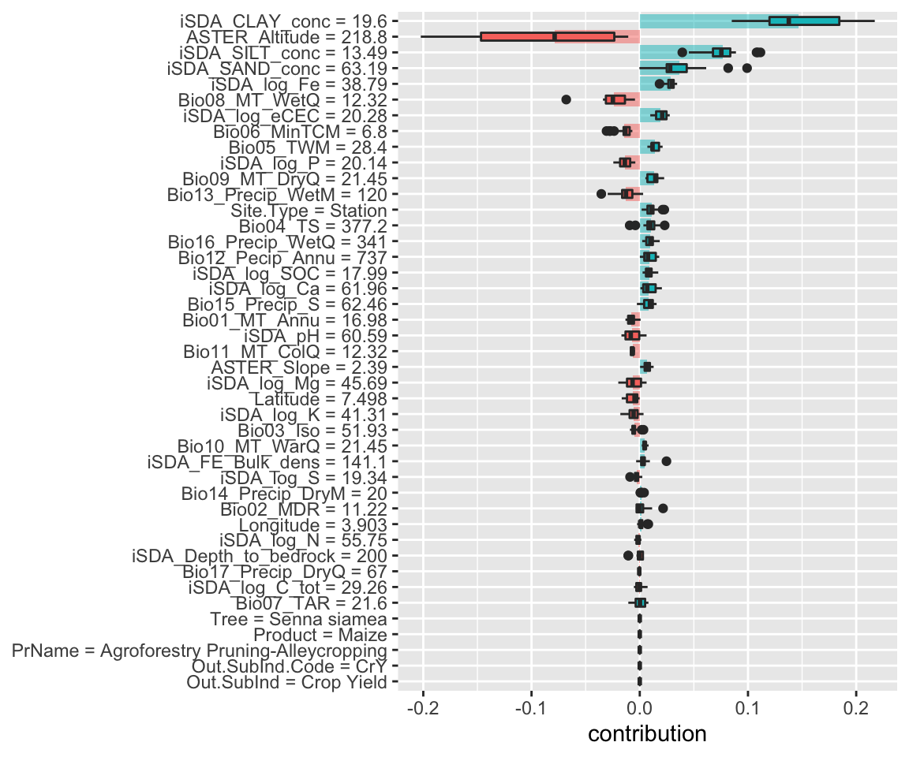
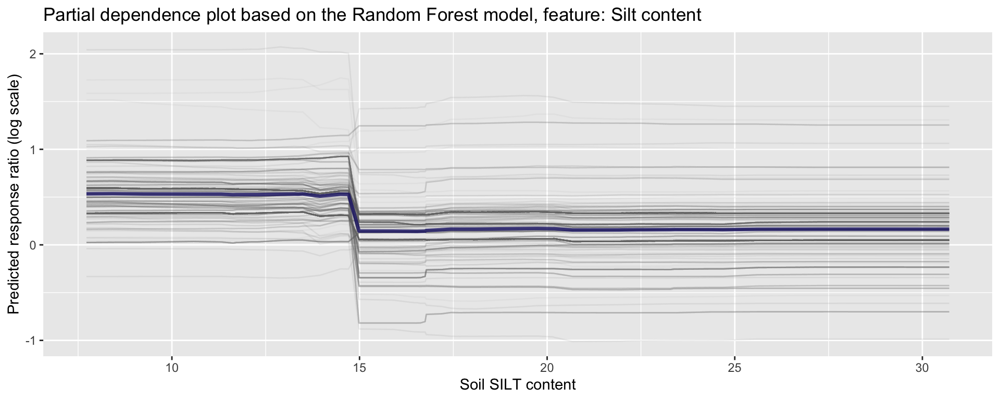
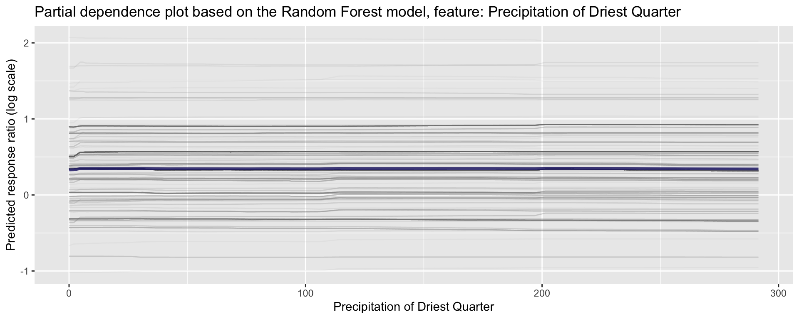
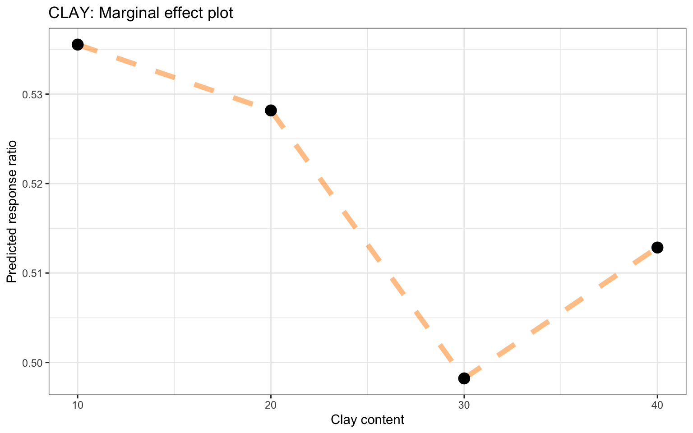
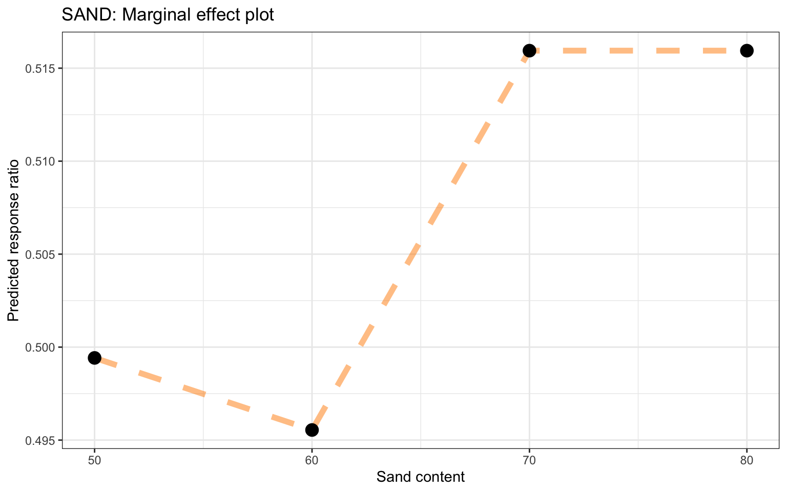

Here we are going to explore Machine Learning with Tidymodels on the ERA agroforestry data
These objects can be created by crossing all combinations of pre-processors (e.g., formula, recipe, etc) and model specifications. This different model toolkit in the arsenal of
Loading necessary R packages and ERA data
Loading general R packages
This part of the document is where we actually get to the nitty-gritty of the ERA agroforestry data and therefore it requires us to load a number of R packages for both general Explorortive Data Analysis and Machine Learning.
Show code
# Using the pacman functions to load required packages
if(!require("pacman", character.only = TRUE)){
install.packages("pacman",dependencies = T)
}
# ------------------------------------------------------------------------------------------
# General packages
# ------------------------------------------------------------------------------------------
required.packages <- c("tidyverse", "tidymodels", "finetune", "kernlab", "here", "hablar", "spatialsample",
"stacks", "rules", "baguette", "viridis", "yardstick", "DALEXtra", "see", "ggridges",
# ------------------------------------------------------------------------------------------
# Parallel computing packages
# ------------------------------------------------------------------------------------------
"parallelMap", "parallelly", "parallel", "doParallel"
)
p_load(char=required.packages, install = T,character.only = T)
STEP 1: Getting the data
Removing outliers from logRR
is_outlier <- function(x) {
return(x < quantile(x, 0.25) - 3 * IQR(x) | x > quantile(x, 0.75) + 3 * IQR(x))
}
ml.data.outliers.wf <- ml.data.wf %>%
rationalize(logRR) %>%
drop_na(logRR) %>%
mutate(ERA_Agroforestry = 1) %>%
group_by(ERA_Agroforestry) %>%
mutate(logRR.outlier = ifelse(is_outlier(logRR), logRR, as.numeric(9999))) %>%
ungroup()
Agroforestry data with no outliers
Notice we do not remove missing values
STEP 2: Splitting data
Split data in training and testing sets
set.seed(456)
# Splitting data
af.split.wf <- initial_split(ml.data.no.outliers.wf, prop = 0.80, strata = logRR)
af.train.wf <- training(af.split.wf)
af.test.wf <- testing(af.split.wf)
STEP 3: Define resampling techniques on training data
Notice here that we do not have any repeats defined as we did originally. Previously we used an argument: repeats = 10 to specify the number of times to repeat the V-fold partitioning. Instead we are increasing the number of partitions/folds (v) from 10 to 20, for the cv-folds, just as the spatial clustering cv-folds.
STEP 4: Define model metrics
STEP 5: Create pre-processing recipies
base_recipe <-
recipe(formula = logRR ~ ., data = af.train.wf) %>%
update_role(Site.Type, new_role = "predictor") %>% # alters an existing role in the recipe to variables.
update_role(PrName, # or assigns an initial role to variables that do not yet have a declared role.
Out.SubInd,
Out.SubInd.Code,
Product,
Latitude,
Longitude,
Tree,
new_role = "sample ID")
# ------------------------------------------------------------------------------------------------------------------------------------------------
impute_mean_recipe <-
base_recipe %>%
step_impute_mean(all_numeric_predictors(), skip = FALSE) %>%
step_novel(Site.Type, skip = FALSE) %>%
step_dummy(Site.Type, one_hot = TRUE, naming = partial(dummy_names,sep = "_"), skip = FALSE) %>%
step_zv(all_predictors(), skip = FALSE) %>% # remove any columns with a single unique value
step_nzv(all_predictors(), skip = FALSE)
impute_knn_recipe <-
base_recipe %>%
step_impute_knn(all_numeric_predictors(), skip = FALSE) %>%
step_novel(Site.Type, skip = FALSE) %>%
step_dummy(Site.Type, one_hot = TRUE, naming = partial(dummy_names,sep = "_"), skip = FALSE) %>%
step_zv(all_predictors(), skip = FALSE) %>% # remove any columns with a single unique value
step_nzv(all_predictors(), skip = FALSE)
normalize_recipe <-
base_recipe %>%
step_impute_linear(all_numeric_predictors(), impute_with = imp_vars(Longitude, Latitude), skip = FALSE) %>% # create linear regression models to impute missing data.
step_novel(Site.Type, skip = FALSE) %>%
step_dummy(Site.Type, one_hot = TRUE, naming = partial(dummy_names,sep = "_"), skip = FALSE) %>%
step_zv(all_predictors(), skip = FALSE) %>% # remove any columns with a single unique value
step_nzv(all_predictors(), skip = FALSE) %>%
step_normalize(all_numeric_predictors(), skip = FALSE) # normalize numeric data: standard deviation of one and a mean of zero.
rm_corr_recipe <-
base_recipe %>%
step_impute_linear(all_numeric_predictors(), impute_with = imp_vars(Longitude, Latitude), skip = FALSE) %>% # create linear regression models to impute missing data.
step_novel(Site.Type, skip = FALSE) %>%
step_dummy(Site.Type, one_hot = TRUE, naming = partial(dummy_names,sep = "_"), skip = FALSE) %>%
step_zv(all_predictors(), skip = FALSE) %>% # remove any columns with a single unique value
step_nzv(all_predictors(), skip = FALSE) %>%
step_corr(all_numeric_predictors(), threshold = 0.8, method = "pearson", skip = FALSE)
interact_recipe <-
base_recipe %>%
step_impute_linear(all_numeric_predictors(), impute_with = imp_vars(Longitude, Latitude), skip = FALSE) %>% # create linear regression models to impute missing data.
step_novel(Site.Type, skip = FALSE) %>%
step_dummy(Site.Type, one_hot = TRUE, naming = partial(dummy_names,sep = "_"), skip = FALSE) %>%
step_zv(all_predictors(), skip = FALSE) %>% # remove any columns with a single unique value
step_nzv(all_predictors(), skip = FALSE) %>%
step_interact(~ all_numeric_predictors():all_numeric_predictors(), skip = FALSE)
Note: To view how the recipe pre-process the data simply pipe it into a prep() function to prepare it, then a juice() function to extract it and then its a good idea to make use of the glimpse() function to easily see each variable.
impute_knn_recipe %>% prep() %>% juice() %>% glimpse()
Rows: 3,615
Columns: 45
$ PrName <fct> Agroforestry Pruning, Agroforestry Pru
$ Out.SubInd <fct> Biomass Yield, Biomass Yield, Biomass
$ Product <fct> Maize, Maize, Maize, Maize, Maize, Mai
$ Tree <fct> Leucaena leucocephala, Gliricidia sepi
$ Out.SubInd.Code <fct> BiY, BiY, BiY, BiY, BiY, BiY, BiY, BiY
$ Latitude <dbl> 8.73400, -15.47300, -15.47300, -15.473
$ Longitude <dbl> 38.9860, 35.4502, 35.4502, 35.4502, 35
$ Bio01_MT_Annu <dbl> 22.19247, 22.12917, 22.12917, 22.12917
$ Bio02_MDR <dbl> 11.75548, 11.75417, 11.75417, 11.75417
$ Bio03_Iso <dbl> 83.89650, 83.66040, 83.66040, 83.66040
$ Bio04_TS <dbl> 62.03211, 62.61968, 62.61968, 62.61968
$ Bio05_TWM <dbl> 29.61383, 29.52500, 29.52500, 29.52500
$ Bio06_MinTCM <dbl> 15.60048, 15.47500, 15.47500, 15.47500
$ Bio07_TAR <dbl> 14.01334, 14.05000, 14.05000, 14.05000
$ Bio08_MT_WetQ <dbl> 22.49166, 22.44167, 22.44167, 22.44167
$ Bio09_MT_DryQ <dbl> 22.55358, 22.67500, 22.67500, 22.67500
$ Bio10_MT_WarQ <dbl> 22.96846, 22.90000, 22.90000, 22.90000
$ Bio11_MT_ColQ <dbl> 21.39976, 21.30833, 21.30833, 21.30833
$ Bio12_Pecip_Annu <dbl> 1525.327, 1629.000, 1629.000, 1629.000
$ Bio13_Precip_WetM <dbl> 238.0945, 248.7500, 248.7500, 248.7500
$ Bio14_Precip_DryM <dbl> 52.88835, 51.50000, 51.50000, 51.50000
$ Bio15_Precip_S <dbl> 42.46361, 41.85934, 41.85934, 41.85934
$ Bio16_Precip_WetQ <dbl> 584.07, 625.25, 625.25, 625.25, 625.25
$ Bio17_Precip_DryQ <dbl> 219.1557, 239.2500, 239.2500, 239.2500
$ iSDA_Depth_to_bedrock <dbl> 199.37, 200.00, 200.00, 200.00, 200.00
$ iSDA_SAND_conc <dbl> 34.606, 58.164, 58.164, 58.164, 58.164
$ iSDA_CLAY_conc <dbl> 33.946, 21.706, 21.706, 21.706, 21.706
$ iSDA_SILT_conc <dbl> 27.684, 14.706, 14.706, 14.706, 14.706
$ iSDA_FE_Bulk_dens <dbl> 125.788, 137.686, 137.686, 137.686, 13
$ iSDA_log_C_tot <dbl> 30.250, 31.802, 31.802, 31.802, 31.802
$ iSDA_log_Ca <dbl> 78.846, 69.792, 69.792, 69.792, 69.792
$ iSDA_log_eCEC <dbl> 32.958, 23.772, 23.772, 23.772, 23.772
$ iSDA_log_Fe <dbl> 31.412, 37.594, 37.594, 37.594, 37.594
$ iSDA_log_K <dbl> 56.624, 46.930, 46.930, 46.930, 46.930
$ iSDA_log_Mg <dbl> 63.74, 56.42, 56.42, 56.42, 56.42, 56.
$ iSDA_log_N <dbl> 75.998, 50.764, 50.764, 50.764, 50.764
$ iSDA_log_SOC <dbl> 24.214, 18.410, 18.410, 18.410, 18.410
$ iSDA_log_P <dbl> 27.828, 24.036, 24.036, 24.036, 24.036
$ iSDA_log_S <dbl> 18.43, 13.60, 13.60, 13.60, 13.60, 13.
$ iSDA_pH <dbl> 68.080, 55.762, 55.762, 55.762, 55.762
$ ASTER_Altitude <dbl> 1954.44, 713.24, 713.24, 713.24, 713.2
$ ASTER_Slope <dbl> 5.75, 0.83, 0.83, 0.83, 0.83, 0.83, 0.
$ logRR <dbl> -0.12386948, -0.10301172, -0.26980672,
$ Site.Type_Farm <dbl> 0, 0, 0, 0, 0, 0, 0, 0, 0, 0, 0, 0, 0,
$ Site.Type_Station <dbl> 1, 1, 1, 1, 1, 1, 1, 1, 1, 1, 1, 1, 1,A recipe object is of the class recipe and can also be viewed using the summary() function. This will show the different feature types:
summary(impute_knn_recipe)
# A tibble: 44 4
variable type role source
<chr> <chr> <chr> <chr>
1 PrName nominal sample ID original
2 Out.SubInd nominal sample ID original
3 Product nominal sample ID original
4 Site.Type nominal predictor original
5 Tree nominal sample ID original
6 Out.SubInd.Code nominal sample ID original
7 Latitude numeric sample ID original
8 Longitude numeric sample ID original
9 Bio01_MT_Annu numeric predictor original
10 Bio02_MDR numeric predictor original
# with 34 more rowsSTEP 6: Defining model specifications
lm_spec <- linear_reg() %>%
set_mode("regression") %>%
set_engine("lm")
glm_spec <- linear_reg(
penalty = tune(),
mixture = tune()) %>%
set_engine("glmnet") %>%
set_mode("regression")
cart_spec <-
decision_tree(cost_complexity = tune(),
min_n = tune()) %>%
set_engine("rpart") %>%
set_mode("regression")
mars_spec <-
mars(prod_degree = tune()) %>% #<- use GCV to choose terms
set_engine("earth") %>%
set_mode("regression")
knn_spec <-
nearest_neighbor(neighbors = tune(),
weight_func = tune()) %>%
set_engine("kknn") %>%
set_mode("regression")
svm_p_spec <-
svm_poly(cost = tune(),
degree = tune()) %>%
set_engine("kernlab") %>%
set_mode("regression")
cubist_spec <-
cubist_rules(committees = tune(),
neighbors = tune()) %>%
set_engine("Cubist")
nnet_spec <-
mlp(hidden_units = tune(),
penalty = tune(),
epochs = tune()) %>%
set_engine("nnet", MaxNWts = 2600) %>%
set_mode("regression")
rf_spec <-
rand_forest(mtry = tune(),
min_n = tune(),
trees = tune()) %>%
set_engine("ranger") %>%
set_mode("regression")
xgb_spec <-
boost_tree(tree_depth = tune(),
learn_rate = tune(),
loss_reduction = tune(),
min_n = tune(),
sample_size = tune(),
trees = tune()) %>%
set_engine("xgboost") %>%
set_mode("regression")
STEP 7: Integrating pre-processing and model specification into a workflowset
wflwset_setup <-
workflow_set(
preproc = list(impute_mean = impute_mean_recipe,
impute_knn = impute_knn_recipe,
normalized = normalize_recipe,
rm_corr = rm_corr_recipe,
interaction = interact_recipe),
models = list(lm = lm_spec,
glm = glm_spec,
cart = cart_spec,
mars = mars_spec,
knn = knn_spec,
svm_p = svm_p_spec,
cubist = cubist_spec,
nnet = nnet_spec,
RF = rf_spec,
XGB = xgb_spec),
cross = TRUE
)
saveRDS( wflwset_setup, file = here::here("TidyModWflSet_OUTPUT", "wflwset_setup.RDS"))
We see very clearly that a workflowset contains all possible combinations of model specifications and pre-processing steps. A powerful way to test several models on different forms of pre-processing specifications to scan and find the best setup.
STEP 8: Tuning workflowsets using tune_grid() or tune_race_anova()
There are different ways we can tune/fit our workflowsets. The more traditional one is using tune_grid() from the tune package, that is part of tidymodels. With tune_grid() we will compute a set of performance metrics (e.g.MAE or RMSE) for a pre-defined set of tuning parameters that correspond to a model or recipe across one or more resamples of the data. Hence all set combinations of (hyper)-parameters for the models are used to tune the models individually. This can sometimes cause really long and expensive model tuning.
A more effecient alternative to tune_grid() is the tune_race_anova() from the finetune package. Instead of tuning the individual models based on all possible combinations of (hyper)-parameters tune_race_anova() computes a set of performance metrics (e.g.MAE or RMSE) for a pre-defined set of tuning parameters that correspond to a model or recipe across one or more resamples of the data. After an initial number of resamples have been evaluated, the process eliminates tuning parameter combinations that are unlikely to be the best results using a repeated measure ANOVA model. This approach is significantly more efficient, as not all (hyper)-parameter combination will have to be used in the model tuning process, but only the ones that in a step-wise manner improve model performance.
Using tune_grid()
# Initializing parallel processing
doParallel::registerDoParallel()
set.seed(123)
wflwset_setup_res <-
wflwset_setup %>%
# The first argument is a function name from the {{tune}} package such as `tune_grid()`, `fit_resamples()`, etc.
workflow_map(fn = "tune_grid",
resamples = cv.fold.wf,
grid = 5,
metrics = multi.metric.wf,
verbose = TRUE)
# Terminating parallel session
parallelStop()
Using tune_race_anova()
race_ctrl <-
control_race(
save_pred = TRUE,
parallel_over = "everything",
save_workflow = TRUE
)
# Initializing parallel processing
doParallel::registerDoParallel()
wflwset_setup_race_res <-
wflwset_setup %>%
workflow_map(fn = "tune_race_anova",
seed = 1503,
resamples = cv.fold.wf,
metrics = multi.metric.wf,
verbose = TRUE,
grid = 5,
control = race_ctrl
)
# Terminating parallel session
parallelStop()
STEP 9: Assessing results of the tuned workflowsets
From tune_grid()
Show code
# -------------------------------------------------------------------
# LOAD THE TUNED (tune_race_anova) WORKFLOWSET DATA
wflwset_setup_race_res <- readRDS(here::here("TidyModWflSet_OUTPUT", "wflwset_setup_race_res.RDS"))
#Error: There were 1 workflows that had no results.
# Removing the result that caused the error for not having a result
wflwset_setup_race_res_clean <- wflwset_setup_race_res %>%
dplyr::filter(wflow_id != "interaction_nnet")
Show code
# -------------------------------------------------------------------
autoplot(wflwset_setup_race_res_clean)

Figure 1: Results of the tune race anova workflowset tuning
Show code
wflwset_setup_race_res_clean_no_linear <- wflwset_setup_race_res_clean %>%
dplyr::filter(!str_detect(wflow_id, "_lm"))
autoplot(wflwset_setup_race_res_clean_no_linear)

Figure 2: Results of the tune race anova workflowset tuning after lm models have been excluded
Show code
rank_results(wflwset_setup_race_res_clean_no_linear,
rank_metric = "rmse",
select_best = TRUE) %>%
select(rank, mean, model, wflow_id, .config) %>%
arrange(desc(-rank))
# A tibble: 176 5
rank mean model wflow_id .config
<int> <dbl> <chr> <chr> <chr>
1 1 0.539 rand_forest normalized_RF Preprocessor1_Model5
2 1 0.430 rand_forest normalized_RF Preprocessor1_Model5
3 1 0.588 rand_forest normalized_RF Preprocessor1_Model5
4 1 0.365 rand_forest normalized_RF Preprocessor1_Model5
5 2 0.539 rand_forest rm_corr_RF Preprocessor1_Model5
6 2 0.430 rand_forest rm_corr_RF Preprocessor1_Model5
7 2 0.588 rand_forest rm_corr_RF Preprocessor1_Model5
8 2 0.365 rand_forest rm_corr_RF Preprocessor1_Model5
9 3 0.537 rand_forest interaction_RF Preprocessor1_Model2
10 3 0.430 rand_forest interaction_RF Preprocessor1_Model2
# with 166 more rowsShow code
rank_results(wflwset_setup_race_res_clean_no_linear,
rank_metric = "ccc",
select_best = TRUE) %>%
select(rank, mean, model, wflow_id, .config) %>%
arrange(desc(-rank))
# A tibble: 176 5
rank mean model wflow_id .config
<int> <dbl> <chr> <chr> <chr>
1 1 0.541 decision_tree normalized_cart Preprocessor1_Model2
2 1 0.430 decision_tree normalized_cart Preprocessor1_Model2
3 1 0.590 decision_tree normalized_cart Preprocessor1_Model2
4 1 0.363 decision_tree normalized_cart Preprocessor1_Model2
5 2 0.541 decision_tree rm_corr_cart Preprocessor1_Model2
6 2 0.430 decision_tree rm_corr_cart Preprocessor1_Model2
7 2 0.590 decision_tree rm_corr_cart Preprocessor1_Model2
8 2 0.362 decision_tree rm_corr_cart Preprocessor1_Model2
9 3 0.540 rand_forest normalized_RF Preprocessor1_Model4
10 3 0.430 rand_forest normalized_RF Preprocessor1_Model4
# with 166 more rowsSTEP 10: Finalizing models
Similar to what we wnet through in Part 3: Analysing with Tidymodels, we also have to finalize the models from the tuning results using the best performing (hyper)-parameter configurations. We are going to do this last fitting of the models using the training set. The first step is to pick a workflow to finalize. Since random fores models (RF), boosted tree models (XGB), decision tree models (cart) and generalized linier models (glm) worked well, well extract the best configurations from the sets, update the parameters with the numerically best settings, and fit to the training set.
Extracting best performing models configurations
Show code
rf_wf_best_rmse_results_of_race <-
wflwset_setup_race_res_clean %>%
extract_workflow_set_result("normalized_RF") %>%
select_best(metric = "rmse")
xgb_wf_best_rmse_results_of_race <-
wflwset_setup_race_res_clean %>%
extract_workflow_set_result("interaction_XGB") %>%
select_best(metric = "rmse")
cart_wf_best_rmse_results_of_race <-
wflwset_setup_race_res_clean %>%
extract_workflow_set_result("rm_corr_cart") %>%
select_best(metric = "rmse")
glm_wf_best_rmse_results_of_race <-
wflwset_setup_race_res_clean %>%
extract_workflow_set_result("interaction_glm") %>%
select_best(metric = "rmse")
Performing last fitting on the whole dataset (traningset + testingset)
Show code
rf_best_race_last_fit <-
wflwset_setup_race_res_clean %>%
extract_workflow("normalized_RF") %>%
finalize_workflow(rf_wf_best_rmse_results_of_race) %>%
last_fit(split = af.split.wf)
xgb_best_race_last_fit <-
wflwset_setup_race_res_clean %>%
extract_workflow("interaction_XGB") %>%
finalize_workflow(xgb_wf_best_rmse_results_of_race) %>%
last_fit(split = af.split.wf)
cart_best_race_last_fit <-
wflwset_setup_race_res_clean %>%
extract_workflow("rm_corr_cart") %>%
finalize_workflow(cart_wf_best_rmse_results_of_race) %>%
last_fit(split = af.split.wf)
glm_best_race_last_fit <-
wflwset_setup_race_res_clean %>%
extract_workflow("interaction_glm") %>%
finalize_workflow(glm_wf_best_rmse_results_of_race) %>%
last_fit(split = af.split.wf)
Show code
collect_metrics(rf_best_race_last_fit)
# A tibble: 2 4
.metric .estimator .estimate .config
<chr> <chr> <dbl> <chr>
1 rmse standard 0.600 Preprocessor1_Model1
2 rsq standard 0.393 Preprocessor1_Model1Show code
rf_wflowset_last_fit_plot <-
rf_best_race_last_fit %>%
collect_predictions() %>%
ggplot(aes(x = logRR, y = .pred)) +
geom_abline(col = "red", lty = 2) +
#geom_smooth(method = "gam", linetype = "dashed", col = "black", size = 1) +
geom_jitter(width = 0.5, height = 0.2, alpha = 0.5) +
coord_obs_pred(ratio = 1) +
labs(x = "Observed logRR", y = "Predicted logRR")
rf_wflowset_last_fit_plot

Show code
rf_best_race_last_fit %>%
collect_predictions() %>%
arrange(desc(.pred))
# A tibble: 904 5
id .pred .row logRR .config
<chr> <dbl> <int> <dbl> <chr>
1 train/test split 2.08 1276 2.23 Preprocessor1_Model1
2 train/test split 2.08 1284 2.27 Preprocessor1_Model1
3 train/test split 2.08 1289 1.78 Preprocessor1_Model1
4 train/test split 1.76 301 0.699 Preprocessor1_Model1
5 train/test split 1.76 302 2.13 Preprocessor1_Model1
6 train/test split 1.76 305 2.56 Preprocessor1_Model1
7 train/test split 1.76 308 1.94 Preprocessor1_Model1
8 train/test split 1.74 1638 2.08 Preprocessor1_Model1
9 train/test split 1.74 1641 2.07 Preprocessor1_Model1
10 train/test split 1.74 1674 1.56 Preprocessor1_Model1
# with 894 more rowsSTEP 11: Explaining models and predictions
We suggested that model performance, as measured by appropriate metrics (like RMSE for regression or area under the ROC curve for classification), can be important for all applications of modeling. Similarly, model explanations, answering why a model makes the predictions it does, can be important whether the purpose of your model is largely descriptive, to test a hypothesis, or to make a prediction. Answering the question why? allows modeling practitioners to understand which features were important in predictions and even how model predictions would change under different values for the features.
For some models, like linear regression, it is usually clear how to explain why the model makes the predictions it does. The structure of a linear model contains coefficients for each predictor that are typically straightforward to interpret. For other models, like random forests that can capture non-linear behavior by design, it is less transparent how to explain the models predictions from only the structure of the model itself. Instead, we can apply model explainer algorithms to generate understanding of predictions.
Notes: There are two types of model explanations, global and local. Global model explanations provide an overall understanding aggregated over a whole set of observations; local model explanations provide information about a prediction for a single observation.
The tidymodels framework does not itself contain software for model explanations. Instead, models trained and evaluated with tidymodels can be explained with other, supplementary software in R packages such as lime, vip, and DALEX. We ourselves often choose:
vip functions when we want to use model-based methods that take advantage of model structure (and are often faster), and DALEX functions when we want to use model-agnostic methods that can be applied to any model.
Lets build model-agnostic explainers for both of these models to find out why they make the predictions they do. We can use the DALEXtra add-on package for DALEX, which provides support for tidymodels. Biecek and Burzykowski (2021) provide a thorough exploration of how to use DALEX for model explanations; this chapter only summarizes some important approaches, specific to tidymodels. To compute any kind of model explanation, global or local, using DALEX, we first create an explainer for each model.
Creating trained workflows for each of the four models
Show code
rf_best_race_trained_wf <-
wflwset_setup_race_res_clean %>%
extract_workflow("normalized_RF") %>%
finalize_workflow(rf_wf_best_rmse_results_of_race) %>%
fit(data = af.train.wf)
xgb_best_race_trained_wf <-
wflwset_setup_race_res_clean %>%
extract_workflow("interaction_XGB") %>%
finalize_workflow(xgb_wf_best_rmse_results_of_race) %>%
fit(data = af.train.wf)
cart_best_race_trained_wf <-
wflwset_setup_race_res_clean %>%
extract_workflow("rm_corr_cart") %>%
finalize_workflow(cart_wf_best_rmse_results_of_race) %>%
fit(data = af.train.wf)
glm_best_race_trained_wf <-
wflwset_setup_race_res_clean %>%
extract_workflow("interaction_glm") %>%
finalize_workflow(glm_wf_best_rmse_results_of_race) %>%
fit(data = af.train.wf)
Generating explainers for each of the four models
Show code
vip_features <- c("PrName", "Out.SubInd", "Product", "Tree", "Out.SubInd.Code","Site.Type", "Latitude", "Longitude",
"Bio01_MT_Annu", "Bio02_MDR", "Bio03_Iso", "Bio04_TS", "Bio05_TWM", "Bio06_MinTCM", "Bio07_TAR", "Bio08_MT_WetQ", "Bio09_MT_DryQ", "Bio10_MT_WarQ", "Bio11_MT_ColQ",
"Bio12_Pecip_Annu", "Bio13_Precip_WetM", "Bio14_Precip_DryM", "Bio15_Precip_S", "Bio16_Precip_WetQ", "Bio17_Precip_DryQ", "iSDA_Depth_to_bedrock", "iSDA_SAND_conc",
"iSDA_CLAY_conc", "iSDA_SILT_conc", "iSDA_log_C_tot", "iSDA_FE_Bulk_dens", "iSDA_log_Ca", "iSDA_log_eCEC", "iSDA_log_Fe", "iSDA_log_K", "iSDA_log_Mg", "iSDA_log_N",
"iSDA_log_SOC", "iSDA_log_P", "iSDA_log_S", "iSDA_pH", "ASTER_Altitude", "ASTER_Slope")
vip_train <-
af.train.wf %>%
select(all_of(vip_features))
explainer_rf <-
explain_tidymodels(
rf_best_race_trained_wf,
data = vip_train,
y = af.train.wf$logRR,
label = "Random Forest with normalized data",
verbose = FALSE
)
explainer_xgb <-
explain_tidymodels(
xgb_best_race_trained_wf,
data = vip_train,
y = af.train.wf$logRR,
label = "XGBoost with interactions",
verbose = FALSE
)
explainer_cart <-
explain_tidymodels(
cart_best_race_trained_wf,
data = vip_train,
y = af.train.wf$logRR,
label = "Cart with removed correlations",
verbose = FALSE
)
explainer_glm <-
explain_tidymodels(
glm_best_race_trained_wf,
data = vip_train,
y = af.train.wf$logRR,
label = "glm with interactions",
verbose = FALSE
)
Local explanations
Observed low logRR
Show code
af.train.wf %>%
relocate(logRR) %>%
arrange(desc(-logRR)) %>%
dplyr::filter(PrName == "Agroforestry Pruning-Alleycropping")
# A tibble: 725 44
logRR PrName Out.SubInd Product Site.Type Tree Out.SubInd.Code
<dbl> <fct> <fct> <fct> <fct> <fct> <fct>
1 -2.15 Agrofore Biomass Y Maize Station Grevi BiY
2 -1.81 Agrofore Crop Yield Maize Station Senna CrY
3 -1.80 Agrofore Crop Yield Sorghum Farm Leuca CrY
4 -1.69 Agrofore Crop Yield Maize Station Senna CrY
5 -1.52 Agrofore Crop Yield Maize Station Senna CrY
6 -1.51 Agrofore Crop Yield Common Station Maeso CrY
7 -1.46 Agrofore Biomass Y Common Station Markh BiY
8 -1.40 Agrofore Crop Yield Maize Station Melia CrY
9 -1.39 Agrofore Crop Yield Sorghum Farm Leuca CrY
10 -1.30 Agrofore Crop Yield Sorghum Farm Azadi CrY
# with 715 more rows, and 37 more variables: Latitude <dbl>,
# Longitude <dbl>, Bio01_MT_Annu <dbl>, Bio02_MDR <dbl>,
# Bio03_Iso <dbl>, Bio04_TS <dbl>, Bio05_TWM <dbl>,
# Bio06_MinTCM <dbl>, Bio07_TAR <dbl>, Bio08_MT_WetQ <dbl>,
# Bio09_MT_DryQ <dbl>, Bio10_MT_WarQ <dbl>, Bio11_MT_ColQ <dbl>,
# Bio12_Pecip_Annu <dbl>, Bio13_Precip_WetM <dbl>,
# Bio14_Precip_DryM <dbl>, Bio15_Precip_S <dbl>, Show code
vip_train_1 <- vip_train %>%
dplyr::filter(PrName == "Agroforestry Pruning-Alleycropping" &
Out.SubInd == "Crop Yield" &
Product == "Maize" &
Tree == "Senna siamea" &
Site.Type == "Station" &
Latitude == -1.58240 &
Longitude == 37.24320)
obs_1 <- vip_train_1[1,]
Show code
ml.data.no.outliers.wf %>%
rationalize() %>%
step_impute_mean(all_numeric()) %>%
relocate(logRR) %>%
dplyr::select(-c(Out.SubInd, Product, Site.Type, Tree, Out.SubInd.Code, Latitude, Latitude)) %>%
group_by(PrName) %>%
summarise(across(everything(), mean)) %>%
dplyr::filter(PrName == "Agroforestry Fallow" |
PrName == "Agroforestry Pruning"|
PrName == "Alleycropping"|
PrName == "Parklands") %>%
arrange(desc(logRR))
# A tibble: 4 39
PrName logRR Longitude Bio01_MT_Annu Bio02_MDR Bio03_Iso Bio04_TS
<fct> <dbl> <dbl> <dbl> <dbl> <dbl> <dbl>
1 Agrofor 0.649 9.19 18.1 11.3 56.2 326.
2 Agrofor 0.406 19.6 NA NA NA NA
3 Parklan -0.123 8.68 23.9 11.0 68.2 180.
4 Alleycr -0.199 26.6 21.0 11.2 68.1 186.
# with 32 more variables: Bio05_TWM <dbl>, Bio06_MinTCM <dbl>,
# Bio07_TAR <dbl>, Bio08_MT_WetQ <dbl>, Bio09_MT_DryQ <dbl>,
# Bio10_MT_WarQ <dbl>, Bio11_MT_ColQ <dbl>, Bio12_Pecip_Annu <dbl>,
# Bio13_Precip_WetM <dbl>, Bio14_Precip_DryM <dbl>,
# Bio15_Precip_S <dbl>, Bio16_Precip_WetQ <dbl>,
# Bio17_Precip_DryQ <dbl>, iSDA_Depth_to_bedrock <dbl>,
# iSDA_SAND_conc <dbl>, iSDA_CLAY_conc <dbl>, Show code
ml.data.no.outliers.wf %>%
rationalize() %>%
step_impute_mean(all_numeric()) %>%
relocate(logRR) %>%
dplyr::select(-c(Out.SubInd, Product, Site.Type, Tree, Out.SubInd.Code, Latitude, Latitude)) %>%
group_by(PrName) %>%
# summarise(across(everything(), mean)) %>%
dplyr::filter(PrName == "Agroforestry Fallow" |
PrName == "Agroforestry Pruning"|
PrName == "Alleycropping"|
PrName == "Parklands") %>%
ggplot() +
geom_boxplot(aes(x = reorder(PrName, iSDA_SAND_conc), y = iSDA_SAND_conc, col = PrName)) +
geom_jitter(aes(x = reorder(PrName, iSDA_SAND_conc), y = iSDA_SAND_conc, col = PrName), height = 0.4, width = 0.1) +
theme_lucid(plot.title.size = 25,
axis.text.size = 15,
legend.title.size = 20,
legend.text.size = 20,
axis.title.size = 20) +
theme(legend.position = "none", axis.text.x = element_text(angle = 60, hjust=1), plot.margin=unit(c(1,6,1,6),"cm"))

Show code
ml.data.no.outliers.wf %>%
rationalize() %>%
drop_na() %>%
relocate(logRR) %>%
dplyr::select(-c(Out.SubInd, Product, Site.Type, Tree, Out.SubInd.Code, Latitude, Longitude)) %>%
group_by(PrName) %>%
# summarise(across(everything(), mean)) %>%
dplyr::filter(PrName == "Agroforestry Fallow" |
PrName == "Agroforestry Pruning"|
PrName == "Alleycropping"|
PrName == "Parklands") %>%
ggplot(aes(y = PrName, x = iSDA_SAND_conc)) +
stat_density_ridges(quantile_lines = TRUE, quantiles = c(0.025, 0.50, 0.975), col = "orange", alpha = 0.5, size = 0.2, scale = 2,
jittered_points = TRUE, position = position_points_jitter(width = 5, height = 0.05), point_shape = '|', bandwidth = 6) +
theme_lucid() +
xlab("Sand concentration %") +
ylab("") +
ggtitle("SAND concentration (%)")
Bio15_Precip_S
Show code
ml.data.no.outliers.wf %>%
rationalize() %>%
drop_na() %>%
relocate(logRR) %>%
dplyr::select(-c(Out.SubInd, Product, Site.Type, Tree, Out.SubInd.Code, Latitude, Longitude)) %>%
group_by(PrName) %>%
# summarise(across(everything(), mean)) %>%
dplyr::filter(PrName == "Agroforestry Fallow" |
PrName == "Agroforestry Pruning"|
PrName == "Alleycropping"|
PrName == "Parklands") %>%
ggplot(aes(y = PrName, x = Bio14_Precip_DryM)) +
stat_density_ridges(quantile_lines = TRUE, quantiles = c(0.025, 0.50, 0.975), col = "midnightblue", alpha = 0.5, size = 0.2, scale = 2,
jittered_points = TRUE, position = position_points_jitter(width = 50, height = 0.05), point_shape = '|', , bandwidth = 3.75) +
theme_lucid() +
xlab("Precipitation (driest month)") +
ylab("") +
ggtitle("Precipitation (driest month) [mm]")

Bio02_MDR
Show code
ml.data.no.outliers.wf %>%
rationalize() %>%
drop_na() %>%
relocate(logRR) %>%
dplyr::select(-c(Out.SubInd, Product, Site.Type, Tree, Out.SubInd.Code, Latitude, Longitude)) %>%
group_by(PrName) %>%
# summarise(across(everything(), mean)) %>%
dplyr::filter(PrName == "Agroforestry Fallow" |
PrName == "Agroforestry Pruning"|
PrName == "Alleycropping"|
PrName == "Parklands") %>%
ggplot(aes(y = PrName, x = Bio05_TWM)) +
stat_density_ridges(quantile_lines = TRUE, quantiles = c(0.025, 0.50, 0.975), col = "darkgreen", alpha = 0.5, size = 0.2, scale = 2,
jittered_points = TRUE, position = position_points_jitter(width = 50, height = 0.05), point_shape = '|', bandwidth = 2) +
theme_lucid() +
xlab("Temperature (max temperature of warmest month)") +
ylab("") +
ggtitle("Temperature (max temperature of warmest month) [C]")

Local model explanations provide information about a prediction for a single observation. For example, lets consider an observation of Agroforestry Pruning-Alleycropping for the outcome Maize Crop Yield conducted at a Station with the agroforestry tree being Melia azedarach. This observation has:
logRR = -1.812378756
Latitude = 0.46667
Longitude = 33.45000
Bio01_MT_Annu = 24.22083
Bio02_MDR = 10.708333
Bio03_Iso = 60.58500
Bio04_TS = 128.08553
Bio05_TWM = 33.30000 <- change these values
Bio06_MinTCM = 15.625000
Bio07_TAR = 17.674999
Bio08_MT_WetQ = 22.962501
Bio09_MT_DryQ = 24.53333
Bio10_MT_WarQ = 26.00833
Bio11_MT_ColQ = 22.962501
Bio12_Pecip_Annu = 1790.25000
Bio13_Precip_WetM = 310.750000
Bio14_Precip_DryM = 5.0000000
Bio15_Precip_S = 78.79493
Bio16_Precip_WetQ = 884.50000
Bio17_Precip_DryQ = 25.00000000
iSDA_Depth_to_bedrock = 200.00
iSDA_SAND_conc = 34.890
iSDA_CLAY_conc = 42.212
iSDA_SILT_conc = 24.680
iSDA_FE_Bulk_dens = 139.494
iSDA_log_C_tot = 29.362
iSDA_log_Ca = 68.194
iSDA_log_eCEC = 24.928
iSDA_log_Fe = 44.742
iSDA_log_K = 43.894
iSDA_log_Mg = 50.79
iSDA_log_N = 63.370
iSDA_log_SOC = 23.020
iSDA_log_P = 19.512
iSDA_log_S = 22.45
iSDA_pH = 56.886
ASTER_Altitude = 1184.43
ASTER_Slope = 2.79
Show code
rf_breakdown <- predict_parts(explainer = explainer_rf, new_observation = obs_1)
rf_breakdown %>% arrange(desc(-contribution))
contribution
Random Forest with normalized data: prediction -0.330
Random Forest with normalized data: iSDA_SILT_conc = 16.748 -0.183
Random Forest with normalized data: iSDA_log_K = 53.296 -0.088
Random Forest with normalized data: Bio14_Precip_DryM = 42 -0.080
Random Forest with normalized data: iSDA_log_Ca = 67.774 -0.074
Random Forest with normalized data: iSDA_SAND_conc = 48.582 -0.053
Random Forest with normalized data: Bio16_Precip_WetQ = 585 -0.049
Random Forest with normalized data: iSDA_CLAY_conc = 33.402 -0.047
Random Forest with normalized data: Bio05_TWM = 27.5 -0.033
Random Forest with normalized data: Bio13_Precip_WetM = 227 -0.023
Random Forest with normalized data: iSDA_pH = 59.784 -0.022
Random Forest with normalized data: Bio08_MT_WetQ = 21.7999992370605 -0.018
Random Forest with normalized data: iSDA_Depth_to_bedrock = 199.99 -0.014
Random Forest with normalized data: Bio12_Pecip_Annu = 1316 -0.013
Random Forest with normalized data: Bio01_MT_Annu = 21.6166667938232 -0.012
Random Forest with normalized data: iSDA_log_C_tot = 27.514 -0.008
Random Forest with normalized data: Bio10_MT_WarQ = 22.283332824707 -0.008
Random Forest with normalized data: Bio02_MDR = 9.71666717529297 -0.007
Random Forest with normalized data: Bio15_Precip_S = 53.0450210571289 -0.007
Random Forest with normalized data: Bio06_MinTCM = 15.8000001907349 -0.006
Random Forest with normalized data: Bio17_Precip_DryQ = 168 -0.005
Random Forest with normalized data: iSDA_log_eCEC = 27.786 -0.002
Random Forest with normalized data: iSDA_log_N = 60.844 -0.001
Random Forest with normalized data: Bio03_Iso = 83.0484390258789 -0.001
Random Forest with normalized data: Bio09_MT_DryQ = 20.9166660308838 -0.001
Random Forest with normalized data: Latitude = -1.5824 0.000
Random Forest with normalized data: PrName = 5 0.000
Random Forest with normalized data: Out.SubInd = 4 0.000
Random Forest with normalized data: Product = 2 0.000
Random Forest with normalized data: Tree = 30 0.000
Random Forest with normalized data: Out.SubInd.Code = 4 0.000
Random Forest with normalized data: Longitude = 37.2432 0.000
Random Forest with normalized data: ASTER_Slope = 4.2 0.000
Random Forest with normalized data: Bio11_MT_ColQ = 20.9166660308838 0.001
Random Forest with normalized data: iSDA_log_S = 17.79 0.001
Random Forest with normalized data: iSDA_log_Fe = 35.182 0.001
Random Forest with normalized data: iSDA_log_SOC = 22.29 0.001
Random Forest with normalized data: Site.Type = 2 0.004
Random Forest with normalized data: iSDA_log_Mg = 55.09 0.004
Random Forest with normalized data: iSDA_log_P = 24.798 0.004
Random Forest with normalized data: Bio07_TAR = 11.6999998092651 0.006
Random Forest with normalized data: iSDA_FE_Bulk_dens = 132.154 0.008
Random Forest with normalized data: ASTER_Altitude = 1578.35 0.028
Random Forest with normalized data: Bio04_TS = 52.8863792419434 0.028
Random Forest with normalized data: intercept 0.335Show code
xgb_breakdown <- predict_parts(explainer = explainer_xgb, new_observation = obs_1)
xgb_breakdown %>% arrange(desc(-contribution))
contribution
XGBoost with interactions: prediction -0.311
XGBoost with interactions: iSDA_SAND_conc = 48.582 -0.130
XGBoost with interactions: iSDA_SILT_conc = 16.748 -0.115
XGBoost with interactions: iSDA_CLAY_conc = 33.402 -0.106
XGBoost with interactions: iSDA_log_C_tot = 27.514 -0.099
XGBoost with interactions: iSDA_log_SOC = 22.29 -0.077
XGBoost with interactions: iSDA_log_eCEC = 27.786 -0.052
XGBoost with interactions: iSDA_log_Ca = 67.774 -0.046
XGBoost with interactions: Bio12_Pecip_Annu = 1316 -0.044
XGBoost with interactions: iSDA_log_K = 53.296 -0.033
XGBoost with interactions: Bio16_Precip_WetQ = 585 -0.030
XGBoost with interactions: iSDA_log_S = 17.79 -0.024
XGBoost with interactions: iSDA_FE_Bulk_dens = 132.154 -0.020
XGBoost with interactions: iSDA_log_N = 60.844 -0.019
XGBoost with interactions: Bio04_TS = 52.8863792419434 -0.017
XGBoost with interactions: iSDA_log_Fe = 35.182 -0.013
XGBoost with interactions: Bio15_Precip_S = 53.0450210571289 -0.012
XGBoost with interactions: Bio07_TAR = 11.6999998092651 -0.010
XGBoost with interactions: Bio01_MT_Annu = 21.6166667938232 -0.009
XGBoost with interactions: iSDA_pH = 59.784 -0.009
XGBoost with interactions: Bio02_MDR = 9.71666717529297 -0.008
XGBoost with interactions: iSDA_Depth_to_bedrock = 199.99 -0.007
XGBoost with interactions: Bio14_Precip_DryM = 42 -0.007
XGBoost with interactions: Bio06_MinTCM = 15.8000001907349 -0.005
XGBoost with interactions: Bio17_Precip_DryQ = 168 -0.003
XGBoost with interactions: Bio10_MT_WarQ = 22.283332824707 -0.002
XGBoost with interactions: Latitude = -1.5824 0.000
XGBoost with interactions: Bio09_MT_DryQ = 20.9166660308838 0.000
XGBoost with interactions: Site.Type = 2 0.000
XGBoost with interactions: PrName = 5 0.000
XGBoost with interactions: Out.SubInd = 4 0.000
XGBoost with interactions: Product = 2 0.000
XGBoost with interactions: Tree = 30 0.000
XGBoost with interactions: Out.SubInd.Code = 4 0.000
XGBoost with interactions: Longitude = 37.2432 0.000
XGBoost with interactions: Bio11_MT_ColQ = 20.9166660308838 0.001
XGBoost with interactions: Bio05_TWM = 27.5 0.003
XGBoost with interactions: Bio13_Precip_WetM = 227 0.004
XGBoost with interactions: iSDA_log_Mg = 55.09 0.007
XGBoost with interactions: iSDA_log_P = 24.798 0.014
XGBoost with interactions: Bio03_Iso = 83.0484390258789 0.017
XGBoost with interactions: Bio08_MT_WetQ = 21.7999992370605 0.023
XGBoost with interactions: ASTER_Slope = 4.2 0.032
XGBoost with interactions: ASTER_Altitude = 1578.35 0.146
XGBoost with interactions: intercept 0.338Show code
cart_breakdown <- predict_parts(explainer = explainer_cart, new_observation = obs_1)
cart_breakdown %>% arrange(desc(-contribution))
contribution
Cart with removed correlations: iSDA_SILT_conc = 16.748 -0.761
Cart with removed correlations: prediction -0.331
Cart with removed correlations: iSDA_pH = 59.784 -0.188
Cart with removed correlations: Bio16_Precip_WetQ = 585 -0.121
Cart with removed correlations: Bio15_Precip_S = 53.0450210571289 -0.053
Cart with removed correlations: iSDA_CLAY_conc = 33.402 -0.025
Cart with removed correlations: iSDA_log_N = 60.844 -0.012
Cart with removed correlations: Bio14_Precip_DryM = 42 -0.006
Cart with removed correlations: ASTER_Slope = 4.2 0.000
Cart with removed correlations: iSDA_log_S = 17.79 0.000
Cart with removed correlations: iSDA_log_C_tot = 27.514 0.000
Cart with removed correlations: iSDA_log_P = 24.798 0.000
Cart with removed correlations: Bio05_TWM = 27.5 0.000
Cart with removed correlations: Latitude = -1.5824 0.000
Cart with removed correlations: Site.Type = 2 0.000
Cart with removed correlations: iSDA_log_Ca = 67.774 0.000
Cart with removed correlations: Bio09_MT_DryQ = 20.9166660308838 0.000
Cart with removed correlations: Longitude = 37.2432 0.000
Cart with removed correlations: iSDA_log_Fe = 35.182 0.000
Cart with removed correlations: Bio08_MT_WetQ = 21.7999992370605 0.000
Cart with removed correlations: PrName = 5 0.000
Cart with removed correlations: Out.SubInd = 4 0.000
Cart with removed correlations: Product = 2 0.000
Cart with removed correlations: Tree = 30 0.000
Cart with removed correlations: Out.SubInd.Code = 4 0.000
Cart with removed correlations: Bio01_MT_Annu = 21.6166667938232 0.000
Cart with removed correlations: Bio03_Iso = 83.0484390258789 0.000
Cart with removed correlations: Bio06_MinTCM = 15.8000001907349 0.000
Cart with removed correlations: Bio07_TAR = 11.6999998092651 0.000
Cart with removed correlations: Bio10_MT_WarQ = 22.283332824707 0.000
Cart with removed correlations: Bio11_MT_ColQ = 20.9166660308838 0.000
Cart with removed correlations: Bio12_Pecip_Annu = 1316 0.000
Cart with removed correlations: Bio13_Precip_WetM = 227 0.000
Cart with removed correlations: Bio17_Precip_DryQ = 168 0.000
Cart with removed correlations: iSDA_Depth_to_bedrock = 199.99 0.000
Cart with removed correlations: iSDA_SAND_conc = 48.582 0.000
Cart with removed correlations: iSDA_FE_Bulk_dens = 132.154 0.000
Cart with removed correlations: iSDA_log_eCEC = 27.786 0.000
Cart with removed correlations: iSDA_log_Mg = 55.09 0.000
Cart with removed correlations: iSDA_log_SOC = 22.29 0.000
Cart with removed correlations: ASTER_Altitude = 1578.35 0.001
Cart with removed correlations: Bio02_MDR = 9.71666717529297 0.006
Cart with removed correlations: iSDA_log_K = 53.296 0.089
Cart with removed correlations: intercept 0.335
Cart with removed correlations: Bio04_TS = 52.8863792419434 0.404Show code
glm_breakdown <- predict_parts(explainer = explainer_glm, new_observation = obs_1)
glm_breakdown
contribution
glm with interactions: intercept 0.335
glm with interactions: Bio17_Precip_DryQ = 168 1.185
glm with interactions: Bio07_TAR = 11.6999998092651 -0.907
glm with interactions: Bio03_Iso = 83.0484390258789 0.569
glm with interactions: ASTER_Altitude = 1578.35 0.604
glm with interactions: iSDA_log_SOC = 22.29 -0.535
glm with interactions: iSDA_log_Ca = 67.774 0.436
glm with interactions: Bio14_Precip_DryM = 42 -0.371
glm with interactions: Bio16_Precip_WetQ = 585 -0.257
glm with interactions: Bio02_MDR = 9.71666717529297 0.331
glm with interactions: Bio15_Precip_S = 53.0450210571289 -0.289
glm with interactions: Bio04_TS = 52.8863792419434 -0.665
glm with interactions: Bio11_MT_ColQ = 20.9166660308838 0.303
glm with interactions: Bio05_TWM = 27.5 -0.172
glm with interactions: Bio13_Precip_WetM = 227 -0.109
glm with interactions: Bio06_MinTCM = 15.8000001907349 0.039
glm with interactions: iSDA_SAND_conc = 48.582 -0.192
glm with interactions: Bio08_MT_WetQ = 21.7999992370605 -0.047
glm with interactions: iSDA_CLAY_conc = 33.402 0.031
glm with interactions: Bio10_MT_WarQ = 22.283332824707 0.072
glm with interactions: iSDA_log_eCEC = 27.786 -0.098
glm with interactions: iSDA_log_K = 53.296 -0.259
glm with interactions: iSDA_log_P = 24.798 -0.268
glm with interactions: iSDA_pH = 59.784 -0.079
glm with interactions: iSDA_log_Mg = 55.09 -0.118
glm with interactions: ASTER_Slope = 4.2 0.082
glm with interactions: Bio01_MT_Annu = 21.6166667938232 0.059
glm with interactions: iSDA_log_C_tot = 27.514 -0.025
glm with interactions: iSDA_SILT_conc = 16.748 0.024
glm with interactions: Bio09_MT_DryQ = 20.9166660308838 0.051
glm with interactions: iSDA_FE_Bulk_dens = 132.154 0.010
glm with interactions: iSDA_log_S = 17.79 -0.010
glm with interactions: iSDA_log_N = 60.844 0.135
glm with interactions: Bio12_Pecip_Annu = 1316 0.048
glm with interactions: Site.Type = 2 -0.194
glm with interactions: iSDA_Depth_to_bedrock = 199.99 -0.012
glm with interactions: Longitude = 37.2432 0.000
glm with interactions: iSDA_log_Fe = 35.182 -0.036
glm with interactions: Latitude = -1.5824 0.000
glm with interactions: PrName = 5 0.000
glm with interactions: Out.SubInd = 4 0.000
glm with interactions: Product = 2 0.000
glm with interactions: Tree = 30 0.000
glm with interactions: Out.SubInd.Code = 4 0.000
glm with interactions: prediction -0.329Model break-down explanations like these depend on the order of the features.
Show code
predict_parts_rf <- predict_parts(explainer = explainer_rf,
new_observation = obs_1,
order = rf_breakdown$variable_name)
predict_parts_rf
contribution
Random Forest with normalized data: intercept 0.335
Random Forest with normalized data: iSDA_SILT_conc = 16.748 -0.183
Random Forest with normalized data: ASTER_Altitude = 1578.35 0.028
Random Forest with normalized data: Bio04_TS = 52.8863792419434 0.028
Random Forest with normalized data: iSDA_SAND_conc = 48.582 -0.053
Random Forest with normalized data: iSDA_log_K = 53.296 -0.088
Random Forest with normalized data: iSDA_log_eCEC = 27.786 -0.002
Random Forest with normalized data: ASTER_Slope = 4.2 0.000
Random Forest with normalized data: iSDA_FE_Bulk_dens = 132.154 0.008
Random Forest with normalized data: iSDA_pH = 59.784 -0.022
Random Forest with normalized data: Bio14_Precip_DryM = 42 -0.080
Random Forest with normalized data: iSDA_CLAY_conc = 33.402 -0.047
Random Forest with normalized data: Bio16_Precip_WetQ = 585 -0.049
Random Forest with normalized data: iSDA_log_P = 24.798 0.004
Random Forest with normalized data: iSDA_log_Ca = 67.774 -0.074
Random Forest with normalized data: Bio15_Precip_S = 53.0450210571289 -0.007
Random Forest with normalized data: iSDA_log_SOC = 22.29 0.001
Random Forest with normalized data: Bio10_MT_WarQ = 22.283332824707 -0.008
Random Forest with normalized data: iSDA_Depth_to_bedrock = 199.99 -0.014
Random Forest with normalized data: Bio07_TAR = 11.6999998092651 0.006
Random Forest with normalized data: Bio17_Precip_DryQ = 168 -0.005
Random Forest with normalized data: Site.Type = 2 0.004
Random Forest with normalized data: Bio09_MT_DryQ = 20.9166660308838 -0.001
Random Forest with normalized data: iSDA_log_Mg = 55.09 0.004
Random Forest with normalized data: Bio11_MT_ColQ = 20.9166660308838 0.001
Random Forest with normalized data: Bio05_TWM = 27.5 -0.033
Random Forest with normalized data: Latitude = -1.5824 0.000
Random Forest with normalized data: Bio02_MDR = 9.71666717529297 -0.007
Random Forest with normalized data: Bio12_Pecip_Annu = 1316 -0.013
Random Forest with normalized data: Longitude = 37.2432 0.000
Random Forest with normalized data: iSDA_log_S = 17.79 0.001
Random Forest with normalized data: Bio03_Iso = 83.0484390258789 -0.001
Random Forest with normalized data: Bio06_MinTCM = 15.8000001907349 -0.006
Random Forest with normalized data: Bio13_Precip_WetM = 227 -0.023
Random Forest with normalized data: iSDA_log_N = 60.844 -0.001
Random Forest with normalized data: iSDA_log_Fe = 35.182 0.001
Random Forest with normalized data: iSDA_log_C_tot = 27.514 -0.008
Random Forest with normalized data: Bio01_MT_Annu = 21.6166667938232 -0.012
Random Forest with normalized data: Bio08_MT_WetQ = 21.7999992370605 -0.018
Random Forest with normalized data: PrName = 5 0.000
Random Forest with normalized data: Out.SubInd = 4 0.000
Random Forest with normalized data: Product = 2 0.000
Random Forest with normalized data: Tree = 30 0.000
Random Forest with normalized data: Out.SubInd.Code = 4 0.000
Random Forest with normalized data: prediction -0.330We can use the fact that these break-down explanations change based on order to compute the most important features over all (or many) possible orderings. This is the idea behind Shapley Additive Explanations (Lundberg and Lee 2017), where the average contributions of features are computed under different combinations or coalitions of feature orderings. Lets compute SHAP attributions for our duplex, using B = 20 random orderings. (https://ema.drwhy.ai/breakDown.html).
We could use the default plot method from DALEX by calling plot(shap_obs_1), or we can access the underlying data and create a custom plot.
Show code
shap_obs_1_rf <- predict_parts(explainer = explainer_rf,
new_observation = obs_1,
type = "shap",
B = 20)
shap_obs_1_rf
min
Random Forest with normalized data: ASTER_Altitude = 1578 -0.085368241
Random Forest with normalized data: ASTER_Slope = 4.2 -0.021789249
Random Forest with normalized data: Bio01_MT_Annu = 21.62 -0.011996620
Random Forest with normalized data: Bio02_MDR = 9.717 -0.009299092
Random Forest with normalized data: Bio03_Iso = 83.05 -0.013765550
Random Forest with normalized data: Bio04_TS = 52.89 -0.029046787
Random Forest with normalized data: Bio05_TWM = 27.5 -0.041762783
Random Forest with normalized data: Bio06_MinTCM = 15.8 -0.007803686
Random Forest with normalized data: Bio07_TAR = 11.7 -0.003790884
Random Forest with normalized data: Bio08_MT_WetQ = 21.8 -0.014366326
Random Forest with normalized data: Bio09_MT_DryQ = 20.92 -0.002822711
Random Forest with normalized data: Bio10_MT_WarQ = 22.28 -0.013462255
Random Forest with normalized data: Bio11_MT_ColQ = 20.92 -0.005401931
Random Forest with normalized data: Bio12_Pecip_Annu = 1316 -0.020103502
Random Forest with normalized data: Bio13_Precip_WetM = 227 -0.026251862
Random Forest with normalized data: Bio14_Precip_DryM = 42 -0.151433450
Random Forest with normalized data: Bio15_Precip_S = 53.05 -0.009333022
Random Forest with normalized data: Bio16_Precip_WetQ = 585 -0.057642892
Random Forest with normalized data: Bio17_Precip_DryQ = 168 -0.007951676
Random Forest with normalized data: iSDA_CLAY_conc = 33.4 -0.098965359
Random Forest with normalized data: iSDA_Depth_to_bedrock = 200 -0.018945382
Random Forest with normalized data: iSDA_FE_Bulk_dens = 132.2 -0.031964898
Random Forest with normalized data: iSDA_log_C_tot = 27.51 -0.008315572
Random Forest with normalized data: iSDA_log_Ca = 67.77 -0.124764036
Random Forest with normalized data: iSDA_log_eCEC = 27.79 -0.004792442
Random Forest with normalized data: iSDA_log_Fe = 35.18 -0.002279208
Random Forest with normalized data: iSDA_log_K = 53.3 -0.122779232
Random Forest with normalized data: iSDA_log_Mg = 55.09 -0.001941956
Random Forest with normalized data: iSDA_log_N = 60.84 -0.011510828
Random Forest with normalized data: iSDA_log_P = 24.8 -0.005299180
Random Forest with normalized data: iSDA_log_S = 17.79 -0.005892905
Random Forest with normalized data: iSDA_log_SOC = 22.29 -0.019948262
Random Forest with normalized data: iSDA_pH = 59.78 -0.067685537
Random Forest with normalized data: iSDA_SAND_conc = 48.58 -0.075731329
Random Forest with normalized data: iSDA_SILT_conc = 16.75 -0.456205240
Random Forest with normalized data: Latitude = -1.582 -0.012474958
Random Forest with normalized data: Longitude = 37.24 -0.003151692
Random Forest with normalized data: Out.SubInd = Crop Yield 0.000000000
Random Forest with normalized data: Out.SubInd.Code = CrY 0.000000000
Random Forest with normalized data: PrName = Agroforestry Pruning-Alleycropping 0.000000000
Random Forest with normalized data: Product = Maize 0.000000000
Random Forest with normalized data: Site.Type = Station 0.001246342
Random Forest with normalized data: Tree = Senna siamea 0.000000000
q1
Random Forest with normalized data: ASTER_Altitude = 1578 -3.649778e-02
Random Forest with normalized data: ASTER_Slope = 4.2 -1.129421e-02
Random Forest with normalized data: Bio01_MT_Annu = 21.62 -1.074899e-02
Random Forest with normalized data: Bio02_MDR = 9.717 -5.369947e-03
Random Forest with normalized data: Bio03_Iso = 83.05 -5.318216e-03
Random Forest with normalized data: Bio04_TS = 52.89 -1.437588e-02
Random Forest with normalized data: Bio05_TWM = 27.5 -2.635513e-02
Random Forest with normalized data: Bio06_MinTCM = 15.8 -3.726800e-03
Random Forest with normalized data: Bio07_TAR = 11.7 9.190267e-04
Random Forest with normalized data: Bio08_MT_WetQ = 21.8 -7.454669e-03
Random Forest with normalized data: Bio09_MT_DryQ = 20.92 3.426585e-03
Random Forest with normalized data: Bio10_MT_WarQ = 22.28 -7.171556e-03
Random Forest with normalized data: Bio11_MT_ColQ = 20.92 -2.931869e-04
Random Forest with normalized data: Bio12_Pecip_Annu = 1316 -1.070390e-02
Random Forest with normalized data: Bio13_Precip_WetM = 227 -1.676428e-02
Random Forest with normalized data: Bio14_Precip_DryM = 42 -1.057247e-01
Random Forest with normalized data: Bio15_Precip_S = 53.05 -4.217553e-03
Random Forest with normalized data: Bio16_Precip_WetQ = 585 -4.685373e-02
Random Forest with normalized data: Bio17_Precip_DryQ = 168 -3.598718e-03
Random Forest with normalized data: iSDA_CLAY_conc = 33.4 -6.828954e-02
Random Forest with normalized data: iSDA_Depth_to_bedrock = 200 -1.474026e-02
Random Forest with normalized data: iSDA_FE_Bulk_dens = 132.2 -2.153958e-02
Random Forest with normalized data: iSDA_log_C_tot = 27.51 -5.250850e-03
Random Forest with normalized data: iSDA_log_Ca = 67.77 -7.022042e-02
Random Forest with normalized data: iSDA_log_eCEC = 27.79 6.669540e-03
Random Forest with normalized data: iSDA_log_Fe = 35.18 -1.055308e-04
Random Forest with normalized data: iSDA_log_K = 53.3 -1.053998e-01
Random Forest with normalized data: iSDA_log_Mg = 55.09 4.887728e-04
Random Forest with normalized data: iSDA_log_N = 60.84 -3.126224e-03
Random Forest with normalized data: iSDA_log_P = 24.8 3.769077e-03
Random Forest with normalized data: iSDA_log_S = 17.79 -3.631425e-03
Random Forest with normalized data: iSDA_log_SOC = 22.29 -1.183887e-02
Random Forest with normalized data: iSDA_pH = 59.78 -5.043370e-02
Random Forest with normalized data: iSDA_SAND_conc = 48.58 -7.066870e-02
Random Forest with normalized data: iSDA_SILT_conc = 16.75 -3.795036e-01
Random Forest with normalized data: Latitude = -1.582 -2.949350e-03
Random Forest with normalized data: Longitude = 37.24 -2.931024e-06
Random Forest with normalized data: Out.SubInd = Crop Yield 0.000000e+00
Random Forest with normalized data: Out.SubInd.Code = CrY 0.000000e+00
Random Forest with normalized data: PrName = Agroforestry Pruning-Alleycropping 0.000000e+00
Random Forest with normalized data: Product = Maize 0.000000e+00
Random Forest with normalized data: Site.Type = Station 3.088265e-03
Random Forest with normalized data: Tree = Senna siamea 0.000000e+00
median
Random Forest with normalized data: ASTER_Altitude = 1578 3.303210e-02
Random Forest with normalized data: ASTER_Slope = 4.2 9.352991e-03
Random Forest with normalized data: Bio01_MT_Annu = 21.62 -8.579408e-03
Random Forest with normalized data: Bio02_MDR = 9.717 -1.248427e-03
Random Forest with normalized data: Bio03_Iso = 83.05 -3.638750e-03
Random Forest with normalized data: Bio04_TS = 52.89 2.567171e-02
Random Forest with normalized data: Bio05_TWM = 27.5 -1.522176e-02
Random Forest with normalized data: Bio06_MinTCM = 15.8 -5.598774e-04
Random Forest with normalized data: Bio07_TAR = 11.7 3.034566e-03
Random Forest with normalized data: Bio08_MT_WetQ = 21.8 -3.608673e-03
Random Forest with normalized data: Bio09_MT_DryQ = 20.92 6.136941e-03
Random Forest with normalized data: Bio10_MT_WarQ = 22.28 6.878026e-04
Random Forest with normalized data: Bio11_MT_ColQ = 20.92 3.150855e-03
Random Forest with normalized data: Bio12_Pecip_Annu = 1316 -4.912708e-03
Random Forest with normalized data: Bio13_Precip_WetM = 227 -5.530671e-03
Random Forest with normalized data: Bio14_Precip_DryM = 42 -7.132560e-02
Random Forest with normalized data: Bio15_Precip_S = 53.05 4.718604e-03
Random Forest with normalized data: Bio16_Precip_WetQ = 585 -3.405507e-02
Random Forest with normalized data: Bio17_Precip_DryQ = 168 -6.193553e-04
Random Forest with normalized data: iSDA_CLAY_conc = 33.4 -3.787151e-02
Random Forest with normalized data: iSDA_Depth_to_bedrock = 200 -6.519023e-03
Random Forest with normalized data: iSDA_FE_Bulk_dens = 132.2 -1.045432e-02
Random Forest with normalized data: iSDA_log_C_tot = 27.51 -2.976676e-03
Random Forest with normalized data: iSDA_log_Ca = 67.77 -5.699009e-02
Random Forest with normalized data: iSDA_log_eCEC = 27.79 8.195866e-03
Random Forest with normalized data: iSDA_log_Fe = 35.18 1.375444e-03
Random Forest with normalized data: iSDA_log_K = 53.3 -9.101084e-02
Random Forest with normalized data: iSDA_log_Mg = 55.09 7.174604e-03
Random Forest with normalized data: iSDA_log_N = 60.84 -2.174202e-03
Random Forest with normalized data: iSDA_log_P = 24.8 5.554033e-03
Random Forest with normalized data: iSDA_log_S = 17.79 -1.847781e-03
Random Forest with normalized data: iSDA_log_SOC = 22.29 -9.596346e-03
Random Forest with normalized data: iSDA_pH = 59.78 -3.019971e-02
Random Forest with normalized data: iSDA_SAND_conc = 48.58 -6.798895e-02
Random Forest with normalized data: iSDA_SILT_conc = 16.75 -2.996857e-01
Random Forest with normalized data: Latitude = -1.582 -2.803374e-04
Random Forest with normalized data: Longitude = 37.24 8.274155e-05
Random Forest with normalized data: Out.SubInd = Crop Yield 0.000000e+00
Random Forest with normalized data: Out.SubInd.Code = CrY 0.000000e+00
Random Forest with normalized data: PrName = Agroforestry Pruning-Alleycropping 0.000000e+00
Random Forest with normalized data: Product = Maize 0.000000e+00
Random Forest with normalized data: Site.Type = Station 3.809577e-03
Random Forest with normalized data: Tree = Senna siamea 0.000000e+00
mean
Random Forest with normalized data: ASTER_Altitude = 1578 3.663359e-02
Random Forest with normalized data: ASTER_Slope = 4.2 3.037880e-03
Random Forest with normalized data: Bio01_MT_Annu = 21.62 -7.510433e-03
Random Forest with normalized data: Bio02_MDR = 9.717 -1.248427e-03
Random Forest with normalized data: Bio03_Iso = 83.05 -1.068609e-03
Random Forest with normalized data: Bio04_TS = 52.89 2.437068e-02
Random Forest with normalized data: Bio05_TWM = 27.5 -1.522176e-02
Random Forest with normalized data: Bio06_MinTCM = 15.8 -1.196191e-03
Random Forest with normalized data: Bio07_TAR = 11.7 3.034566e-03
Random Forest with normalized data: Bio08_MT_WetQ = 21.8 -4.573455e-03
Random Forest with normalized data: Bio09_MT_DryQ = 20.92 4.560425e-03
Random Forest with normalized data: Bio10_MT_WarQ = 22.28 6.878026e-04
Random Forest with normalized data: Bio11_MT_ColQ = 20.92 3.150855e-03
Random Forest with normalized data: Bio12_Pecip_Annu = 1316 -7.468702e-03
Random Forest with normalized data: Bio13_Precip_WetM = 227 -9.299994e-03
Random Forest with normalized data: Bio14_Precip_DryM = 42 -7.741584e-02
Random Forest with normalized data: Bio15_Precip_S = 53.05 3.930579e-03
Random Forest with normalized data: Bio16_Precip_WetQ = 585 -3.405507e-02
Random Forest with normalized data: Bio17_Precip_DryQ = 168 2.991939e-05
Random Forest with normalized data: iSDA_CLAY_conc = 33.4 -4.363178e-02
Random Forest with normalized data: iSDA_Depth_to_bedrock = 200 -4.859102e-03
Random Forest with normalized data: iSDA_FE_Bulk_dens = 132.2 -1.045432e-02
Random Forest with normalized data: iSDA_log_C_tot = 27.51 -2.373658e-03
Random Forest with normalized data: iSDA_log_Ca = 67.77 -5.699009e-02
Random Forest with normalized data: iSDA_log_eCEC = 27.79 9.188033e-03
Random Forest with normalized data: iSDA_log_Fe = 35.18 4.522886e-03
Random Forest with normalized data: iSDA_log_K = 53.3 -9.101084e-02
Random Forest with normalized data: iSDA_log_Mg = 55.09 1.186520e-02
Random Forest with normalized data: iSDA_log_N = 60.84 -3.126224e-03
Random Forest with normalized data: iSDA_log_P = 24.8 5.792612e-03
Random Forest with normalized data: iSDA_log_S = 17.79 -1.847781e-03
Random Forest with normalized data: iSDA_log_SOC = 22.29 -7.211423e-03
Random Forest with normalized data: iSDA_pH = 59.78 -3.620111e-02
Random Forest with normalized data: iSDA_SAND_conc = 48.58 -6.169285e-02
Random Forest with normalized data: iSDA_SILT_conc = 16.75 -2.996857e-01
Random Forest with normalized data: Latitude = -1.582 -1.486552e-03
Random Forest with normalized data: Longitude = 37.24 5.578808e-05
Random Forest with normalized data: Out.SubInd = Crop Yield 0.000000e+00
Random Forest with normalized data: Out.SubInd.Code = CrY 0.000000e+00
Random Forest with normalized data: PrName = Agroforestry Pruning-Alleycropping 0.000000e+00
Random Forest with normalized data: Product = Maize 0.000000e+00
Random Forest with normalized data: Site.Type = Station 4.029912e-03
Random Forest with normalized data: Tree = Senna siamea 0.000000e+00
q3
Random Forest with normalized data: ASTER_Altitude = 1578 0.1185307841
Random Forest with normalized data: ASTER_Slope = 4.2 0.0137304936
Random Forest with normalized data: Bio01_MT_Annu = 21.62 -0.0063015252
Random Forest with normalized data: Bio02_MDR = 9.717 0.0024774092
Random Forest with normalized data: Bio03_Iso = 83.05 0.0049686038
Random Forest with normalized data: Bio04_TS = 52.89 0.0461471139
Random Forest with normalized data: Bio05_TWM = 27.5 -0.0055918711
Random Forest with normalized data: Bio06_MinTCM = 15.8 0.0016927448
Random Forest with normalized data: Bio07_TAR = 11.7 0.0052748741
Random Forest with normalized data: Bio08_MT_WetQ = 21.8 0.0003117081
Random Forest with normalized data: Bio09_MT_DryQ = 20.92 0.0069071492
Random Forest with normalized data: Bio10_MT_WarQ = 22.28 0.0097478915
Random Forest with normalized data: Bio11_MT_ColQ = 20.92 0.0060017058
Random Forest with normalized data: Bio12_Pecip_Annu = 1316 -0.0042320449
Random Forest with normalized data: Bio13_Precip_WetM = 227 -0.0028835615
Random Forest with normalized data: Bio14_Precip_DryM = 42 -0.0511628389
Random Forest with normalized data: Bio15_Precip_S = 53.05 0.0101800572
Random Forest with normalized data: Bio16_Precip_WetQ = 585 -0.0189797971
Random Forest with normalized data: Bio17_Precip_DryQ = 168 0.0044083656
Random Forest with normalized data: iSDA_CLAY_conc = 33.4 -0.0187187087
Random Forest with normalized data: iSDA_Depth_to_bedrock = 200 0.0031831627
Random Forest with normalized data: iSDA_FE_Bulk_dens = 132.2 -0.0040329542
Random Forest with normalized data: iSDA_log_C_tot = 27.51 0.0016330161
Random Forest with normalized data: iSDA_log_Ca = 67.77 -0.0269535880
Random Forest with normalized data: iSDA_log_eCEC = 27.79 0.0099879916
Random Forest with normalized data: iSDA_log_Fe = 35.18 0.0065379625
Random Forest with normalized data: iSDA_log_K = 53.3 -0.0766093167
Random Forest with normalized data: iSDA_log_Mg = 55.09 0.0214558194
Random Forest with normalized data: iSDA_log_N = 60.84 -0.0008330949
Random Forest with normalized data: iSDA_log_P = 24.8 0.0088267275
Random Forest with normalized data: iSDA_log_S = 17.79 -0.0001045684
Random Forest with normalized data: iSDA_log_SOC = 22.29 0.0007327724
Random Forest with normalized data: iSDA_pH = 59.78 -0.0201140842
Random Forest with normalized data: iSDA_SAND_conc = 48.58 -0.0529136976
Random Forest with normalized data: iSDA_SILT_conc = 16.75 -0.2136054833
Random Forest with normalized data: Latitude = -1.582 0.0011583074
Random Forest with normalized data: Longitude = 37.24 0.0004637487
Random Forest with normalized data: Out.SubInd = Crop Yield 0.0000000000
Random Forest with normalized data: Out.SubInd.Code = CrY 0.0000000000
Random Forest with normalized data: PrName = Agroforestry Pruning-Alleycropping 0.0000000000
Random Forest with normalized data: Product = Maize 0.0000000000
Random Forest with normalized data: Site.Type = Station 0.0050108426
Random Forest with normalized data: Tree = Senna siamea 0.0000000000
max
Random Forest with normalized data: ASTER_Altitude = 1578 0.1498372981
Random Forest with normalized data: ASTER_Slope = 4.2 0.0304217731
Random Forest with normalized data: Bio01_MT_Annu = 21.62 0.0030496105
Random Forest with normalized data: Bio02_MDR = 9.717 0.0064712768
Random Forest with normalized data: Bio03_Iso = 83.05 0.0120473699
Random Forest with normalized data: Bio04_TS = 52.89 0.0892603723
Random Forest with normalized data: Bio05_TWM = 27.5 0.0048513495
Random Forest with normalized data: Bio06_MinTCM = 15.8 0.0067117877
Random Forest with normalized data: Bio07_TAR = 11.7 0.0084967973
Random Forest with normalized data: Bio08_MT_WetQ = 21.8 0.0010338871
Random Forest with normalized data: Bio09_MT_DryQ = 20.92 0.0088761555
Random Forest with normalized data: Bio10_MT_WarQ = 22.28 0.0190042523
Random Forest with normalized data: Bio11_MT_ColQ = 20.92 0.0104384616
Random Forest with normalized data: Bio12_Pecip_Annu = 1316 -0.0018032096
Random Forest with normalized data: Bio13_Precip_WetM = 227 0.0012745901
Random Forest with normalized data: Bio14_Precip_DryM = 42 -0.0289922046
Random Forest with normalized data: Bio15_Precip_S = 53.05 0.0146573467
Random Forest with normalized data: Bio16_Precip_WetQ = 585 -0.0156811821
Random Forest with normalized data: Bio17_Precip_DryQ = 168 0.0090304737
Random Forest with normalized data: iSDA_CLAY_conc = 33.4 -0.0008967557
Random Forest with normalized data: iSDA_Depth_to_bedrock = 200 0.0109334722
Random Forest with normalized data: iSDA_FE_Bulk_dens = 132.2 0.0168902304
Random Forest with normalized data: iSDA_log_C_tot = 27.51 0.0041379863
Random Forest with normalized data: iSDA_log_Ca = 67.77 -0.0059544621
Random Forest with normalized data: iSDA_log_eCEC = 27.79 0.0291775902
Random Forest with normalized data: iSDA_log_Fe = 35.18 0.0235134948
Random Forest with normalized data: iSDA_log_K = 53.3 -0.0496997019
Random Forest with normalized data: iSDA_log_Mg = 55.09 0.0340869273
Random Forest with normalized data: iSDA_log_N = 60.84 0.0006285435
Random Forest with normalized data: iSDA_log_P = 24.8 0.0175203873
Random Forest with normalized data: iSDA_log_S = 17.79 0.0031264189
Random Forest with normalized data: iSDA_log_SOC = 22.29 0.0031198131
Random Forest with normalized data: iSDA_pH = 59.78 -0.0135236274
Random Forest with normalized data: iSDA_SAND_conc = 48.58 -0.0374562159
Random Forest with normalized data: iSDA_SILT_conc = 16.75 -0.1512151569
Random Forest with normalized data: Latitude = -1.582 0.0055562437
Random Forest with normalized data: Longitude = 37.24 0.0015292152
Random Forest with normalized data: Out.SubInd = Crop Yield 0.0000000000
Random Forest with normalized data: Out.SubInd.Code = CrY 0.0000000000
Random Forest with normalized data: PrName = Agroforestry Pruning-Alleycropping 0.0000000000
Random Forest with normalized data: Product = Maize 0.0000000000
Random Forest with normalized data: Site.Type = Station 0.0072881169
Random Forest with normalized data: Tree = Senna siamea 0.0000000000Accessing the underlying data and creating a custom plot
The box plots display the distribution of contributions across all the orderings we tried, and the bars display the average attribution for each feature.
Show code
shap_obs_1_rf_plot <-
shap_obs_1_rf %>%
group_by(variable) %>%
mutate(mean_val = mean(contribution)) %>%
ungroup() %>%
mutate(variable = fct_reorder(variable, abs(mean_val))) %>%
ggplot(aes(contribution, variable, fill = mean_val > 0)) +
geom_col(data = ~distinct(., variable, mean_val),
aes(mean_val, variable),
alpha = 0.5) +
geom_boxplot(width = 0.5) +
theme(legend.position = "none") +
labs(y = NULL)
shap_obs_1_rf_plot

What about a different individual observation in our data set? Lets look at one of our observation that has a relatively high logRR value of 1.458. This observation has Alleycropping practice with the outcome Crop Yield for product Maize conducted at a Station with the agroforestry tree being Desmodium intortum This observation has following biophysical predictor features:
Observed high logRR
Show code
af.train.wf %>%
relocate(logRR) %>%
arrange(desc(logRR)) %>%
dplyr::filter(PrName == "Agroforestry Pruning-Alleycropping")
# A tibble: 725 44
logRR PrName Out.SubInd Product Site.Type Tree Out.SubInd.Code
<dbl> <fct> <fct> <fct> <fct> <fct> <fct>
1 3.05 Agrofore Crop Yield Maize Station Senna CrY
2 2.71 Agrofore Crop Yield Maize Farm Leuca CrY
3 2.49 Agrofore Crop Yield Maize Farm Leuca CrY
4 2.44 Agrofore Crop Yield Maize Farm Leuca CrY
5 2.30 Agrofore Crop Yield Maize Station Senna CrY
6 2.20 Agrofore Crop Yield Maize Farm Leuca CrY
7 1.97 Agrofore Crop Yield Maize Station Senna CrY
8 1.90 Agrofore Crop Yield Maize Farm Leuca CrY
9 1.85 Agrofore Crop Yield Maize Station Gliri CrY
10 1.78 Agrofore Crop Yield Maize Station Gliri CrY
# with 715 more rows, and 37 more variables: Latitude <dbl>,
# Longitude <dbl>, Bio01_MT_Annu <dbl>, Bio02_MDR <dbl>,
# Bio03_Iso <dbl>, Bio04_TS <dbl>, Bio05_TWM <dbl>,
# Bio06_MinTCM <dbl>, Bio07_TAR <dbl>, Bio08_MT_WetQ <dbl>,
# Bio09_MT_DryQ <dbl>, Bio10_MT_WarQ <dbl>, Bio11_MT_ColQ <dbl>,
# Bio12_Pecip_Annu <dbl>, Bio13_Precip_WetM <dbl>,
# Bio14_Precip_DryM <dbl>, Bio15_Precip_S <dbl>, Show code
vip_train_2 <- vip_train %>%
dplyr::filter(PrName == "Agroforestry Pruning-Alleycropping" &
Out.SubInd == "Crop Yield" &
Product == "Maize" &
Tree == "Senna siamea" &
Site.Type == "Station" &
Latitude == 7.49800 &
Longitude == 3.90300) %>%
mutate(across(where(is.numeric), ~ round(., 8)))
obs_2 <- vip_train_2[1,]
logRR = 3.047025568
Latitude = -0.43100
Longitude = 34.20800
Bio01_MT_Annu = 15.78542
Bio02_MDR = 14.079167
Bio03_Iso = 79.09644
Bio04_TS = 65.36565
Bio05_TWM = 25.20000
Bio06_MinTCM = 7.400000
Bio07_TAR = 17.800000
Bio08_MT_WetQ = 16.58333
Bio09_MT_DryQ = 15.90833
Bio10_MT_WarQ = 16.65000
Bio11_MT_ColQ = 15.06250
Bio12_Pecip_Annu = 816.00000
Bio13_Precip_WetM = 128.25000
Bio14_Precip_DryM = 20.2500000
Bio15_Precip_S = 55.87148 <- change these values
Bio16_Precip_WetQ = 300.00000
Bio17_Precip_DryQ = 94.00000000
iSDA_Depth_to_bedrock = 200.00
iSDA_SAND_conc = 41.296
iSDA_CLAY_conc = 33.072
iSDA_SILT_conc = 22.456
iSDA_FE_Bulk_dens = 131.328
iSDA_log_C_tot = 31.534
iSDA_log_Ca = 67.792
iSDA_log_eCEC = 27.962
iSDA_log_Fe = 37.530
iSDA_log_K = 55.520
iSDA_log_Mg = 53.61
iSDA_log_N = 66.422
iSDA_log_SOC = 21.866
iSDA_log_P = 31.078
iSDA_log_S = 33.40
iSDA_pH = 61.378
ASTER_Altitude = 1147.29
ASTER_Slope = 1.78
Show code
shap_obs_2_rf <-
predict_parts(explainer = explainer_rf,
new_observation = obs_2,
type = "shap",
B = 20)
shap_obs_2_rf
min
Random Forest with normalized data: ASTER_Altitude = 218.8 -0.2413360482
Random Forest with normalized data: ASTER_Slope = 2.39 -0.0034194508
Random Forest with normalized data: Bio01_MT_Annu = 16.98 -0.0060876497
Random Forest with normalized data: Bio02_MDR = 11.22 -0.0048735637
Random Forest with normalized data: Bio03_Iso = 51.93 -0.0027591610
Random Forest with normalized data: Bio04_TS = 377.2 -0.0143210659
Random Forest with normalized data: Bio05_TWM = 28.4 -0.0013499454
Random Forest with normalized data: Bio06_MinTCM = 6.8 -0.0032153972
Random Forest with normalized data: Bio07_TAR = 21.6 -0.0080519342
Random Forest with normalized data: Bio08_MT_WetQ = 12.32 -0.0049331385
Random Forest with normalized data: Bio09_MT_DryQ = 21.45 -0.0011637847
Random Forest with normalized data: Bio10_MT_WarQ = 21.45 -0.0211508273
Random Forest with normalized data: Bio11_MT_ColQ = 12.32 -0.0050692743
Random Forest with normalized data: Bio12_Pecip_Annu = 737 -0.0128695840
Random Forest with normalized data: Bio13_Precip_WetM = 120 -0.0191628714
Random Forest with normalized data: Bio14_Precip_DryM = 20 0.0054769448
Random Forest with normalized data: Bio15_Precip_S = 62.46 -0.0034409268
Random Forest with normalized data: Bio16_Precip_WetQ = 341 0.0008373432
Random Forest with normalized data: Bio17_Precip_DryQ = 67 -0.0024917171
Random Forest with normalized data: iSDA_CLAY_conc = 19.6 -0.0528058894
Random Forest with normalized data: iSDA_Depth_to_bedrock = 200 -0.0186626501
Random Forest with normalized data: iSDA_FE_Bulk_dens = 141.1 -0.0106824178
Random Forest with normalized data: iSDA_log_C_tot = 29.26 -0.0052690155
Random Forest with normalized data: iSDA_log_Ca = 61.96 0.0054583049
Random Forest with normalized data: iSDA_log_eCEC = 20.28 0.0081928640
Random Forest with normalized data: iSDA_log_Fe = 38.79 0.0066883005
Random Forest with normalized data: iSDA_log_K = 41.31 -0.0301565806
Random Forest with normalized data: iSDA_log_Mg = 45.69 -0.0084910877
Random Forest with normalized data: iSDA_log_N = 55.75 -0.0223520813
Random Forest with normalized data: iSDA_log_P = 20.14 -0.0207019444
Random Forest with normalized data: iSDA_log_S = 19.34 -0.0043009837
Random Forest with normalized data: iSDA_log_SOC = 17.99 -0.0018825769
Random Forest with normalized data: iSDA_pH = 60.59 -0.0135461971
Random Forest with normalized data: iSDA_SAND_conc = 63.19 0.0104864582
Random Forest with normalized data: iSDA_SILT_conc = 13.49 0.0074155335
Random Forest with normalized data: Latitude = 7.498 -0.0112687196
Random Forest with normalized data: Longitude = 3.903 -0.0063918113
Random Forest with normalized data: Out.SubInd = Crop Yield 0.0000000000
Random Forest with normalized data: Out.SubInd.Code = CrY 0.0000000000
Random Forest with normalized data: PrName = Agroforestry Pruning-Alleycropping 0.0000000000
Random Forest with normalized data: Product = Maize 0.0000000000
Random Forest with normalized data: Site.Type = Station 0.0033461683
Random Forest with normalized data: Tree = Senna siamea 0.0000000000
q1
Random Forest with normalized data: ASTER_Altitude = 218.8 -0.1718120911
Random Forest with normalized data: ASTER_Slope = 2.39 0.0037919848
Random Forest with normalized data: Bio01_MT_Annu = 16.98 -0.0011409895
Random Forest with normalized data: Bio02_MDR = 11.22 -0.0023090251
Random Forest with normalized data: Bio03_Iso = 51.93 0.0006990018
Random Forest with normalized data: Bio04_TS = 377.2 -0.0102228470
Random Forest with normalized data: Bio05_TWM = 28.4 0.0003386013
Random Forest with normalized data: Bio06_MinTCM = 6.8 -0.0003059173
Random Forest with normalized data: Bio07_TAR = 21.6 -0.0016991926
Random Forest with normalized data: Bio08_MT_WetQ = 12.32 -0.0030776112
Random Forest with normalized data: Bio09_MT_DryQ = 21.45 0.0002953544
Random Forest with normalized data: Bio10_MT_WarQ = 21.45 -0.0111695587
Random Forest with normalized data: Bio11_MT_ColQ = 12.32 -0.0029331674
Random Forest with normalized data: Bio12_Pecip_Annu = 737 -0.0072302303
Random Forest with normalized data: Bio13_Precip_WetM = 120 -0.0101459721
Random Forest with normalized data: Bio14_Precip_DryM = 20 0.0068452761
Random Forest with normalized data: Bio15_Precip_S = 62.46 -0.0002349702
Random Forest with normalized data: Bio16_Precip_WetQ = 341 0.0081437740
Random Forest with normalized data: Bio17_Precip_DryQ = 67 -0.0003143049
Random Forest with normalized data: iSDA_CLAY_conc = 19.6 -0.0158543540
Random Forest with normalized data: iSDA_Depth_to_bedrock = 200 -0.0083550365
Random Forest with normalized data: iSDA_FE_Bulk_dens = 141.1 -0.0018845169
Random Forest with normalized data: iSDA_log_C_tot = 29.26 -0.0040194527
Random Forest with normalized data: iSDA_log_Ca = 61.96 0.0148873311
Random Forest with normalized data: iSDA_log_eCEC = 20.28 0.0224058274
Random Forest with normalized data: iSDA_log_Fe = 38.79 0.0090165360
Random Forest with normalized data: iSDA_log_K = 41.31 -0.0112652009
Random Forest with normalized data: iSDA_log_Mg = 45.69 -0.0038861999
Random Forest with normalized data: iSDA_log_N = 55.75 -0.0156536445
Random Forest with normalized data: iSDA_log_P = 20.14 -0.0094423584
Random Forest with normalized data: iSDA_log_S = 19.34 -0.0019752852
Random Forest with normalized data: iSDA_log_SOC = 17.99 0.0020828844
Random Forest with normalized data: iSDA_pH = 60.59 -0.0063019672
Random Forest with normalized data: iSDA_SAND_conc = 63.19 0.0420129543
Random Forest with normalized data: iSDA_SILT_conc = 13.49 0.1125998954
Random Forest with normalized data: Latitude = 7.498 -0.0086720344
Random Forest with normalized data: Longitude = 3.903 -0.0018522265
Random Forest with normalized data: Out.SubInd = Crop Yield 0.0000000000
Random Forest with normalized data: Out.SubInd.Code = CrY 0.0000000000
Random Forest with normalized data: PrName = Agroforestry Pruning-Alleycropping 0.0000000000
Random Forest with normalized data: Product = Maize 0.0000000000
Random Forest with normalized data: Site.Type = Station 0.0043495682
Random Forest with normalized data: Tree = Senna siamea 0.0000000000
median
Random Forest with normalized data: ASTER_Altitude = 218.8 -1.127767e-01
Random Forest with normalized data: ASTER_Slope = 2.39 5.038891e-03
Random Forest with normalized data: Bio01_MT_Annu = 16.98 1.777257e-03
Random Forest with normalized data: Bio02_MDR = 11.22 -7.012580e-04
Random Forest with normalized data: Bio03_Iso = 51.93 3.935940e-03
Random Forest with normalized data: Bio04_TS = 377.2 -3.327840e-03
Random Forest with normalized data: Bio05_TWM = 28.4 1.550933e-03
Random Forest with normalized data: Bio06_MinTCM = 6.8 1.808308e-03
Random Forest with normalized data: Bio07_TAR = 21.6 2.655091e-03
Random Forest with normalized data: Bio08_MT_WetQ = 12.32 -1.558511e-03
Random Forest with normalized data: Bio09_MT_DryQ = 21.45 3.012257e-03
Random Forest with normalized data: Bio10_MT_WarQ = 21.45 -1.726570e-03
Random Forest with normalized data: Bio11_MT_ColQ = 12.32 -1.897767e-03
Random Forest with normalized data: Bio12_Pecip_Annu = 737 -6.770267e-04
Random Forest with normalized data: Bio13_Precip_WetM = 120 -4.936892e-03
Random Forest with normalized data: Bio14_Precip_DryM = 20 1.386736e-02
Random Forest with normalized data: Bio15_Precip_S = 62.46 1.828500e-03
Random Forest with normalized data: Bio16_Precip_WetQ = 341 1.634973e-02
Random Forest with normalized data: Bio17_Precip_DryQ = 67 2.446689e-04
Random Forest with normalized data: iSDA_CLAY_conc = 19.6 1.318456e-02
Random Forest with normalized data: iSDA_Depth_to_bedrock = 200 -2.719444e-03
Random Forest with normalized data: iSDA_FE_Bulk_dens = 141.1 2.345542e-02
Random Forest with normalized data: iSDA_log_C_tot = 29.26 -1.208675e-03
Random Forest with normalized data: iSDA_log_Ca = 61.96 2.576340e-02
Random Forest with normalized data: iSDA_log_eCEC = 20.28 3.053216e-02
Random Forest with normalized data: iSDA_log_Fe = 38.79 1.049400e-02
Random Forest with normalized data: iSDA_log_K = 41.31 -1.841424e-03
Random Forest with normalized data: iSDA_log_Mg = 45.69 -2.234639e-03
Random Forest with normalized data: iSDA_log_N = 55.75 -1.202785e-02
Random Forest with normalized data: iSDA_log_P = 20.14 -4.036027e-03
Random Forest with normalized data: iSDA_log_S = 19.34 -7.052287e-04
Random Forest with normalized data: iSDA_log_SOC = 17.99 6.906871e-03
Random Forest with normalized data: iSDA_pH = 60.59 -4.467944e-03
Random Forest with normalized data: iSDA_SAND_conc = 63.19 5.453691e-02
Random Forest with normalized data: iSDA_SILT_conc = 13.49 1.447453e-01
Random Forest with normalized data: Latitude = 7.498 -3.529958e-03
Random Forest with normalized data: Longitude = 3.903 -3.936695e-05
Random Forest with normalized data: Out.SubInd = Crop Yield 0.000000e+00
Random Forest with normalized data: Out.SubInd.Code = CrY 0.000000e+00
Random Forest with normalized data: PrName = Agroforestry Pruning-Alleycropping 0.000000e+00
Random Forest with normalized data: Product = Maize 0.000000e+00
Random Forest with normalized data: Site.Type = Station 4.942382e-03
Random Forest with normalized data: Tree = Senna siamea 0.000000e+00
mean
Random Forest with normalized data: ASTER_Altitude = 218.8 -0.1127766999
Random Forest with normalized data: ASTER_Slope = 2.39 0.0064832559
Random Forest with normalized data: Bio01_MT_Annu = 16.98 0.0033954507
Random Forest with normalized data: Bio02_MDR = 11.22 -0.0012587779
Random Forest with normalized data: Bio03_Iso = 51.93 0.0053375055
Random Forest with normalized data: Bio04_TS = 377.2 0.0090214697
Random Forest with normalized data: Bio05_TWM = 28.4 0.0030479696
Random Forest with normalized data: Bio06_MinTCM = 6.8 0.0016756997
Random Forest with normalized data: Bio07_TAR = 21.6 0.0026550915
Random Forest with normalized data: Bio08_MT_WetQ = 12.32 -0.0016593249
Random Forest with normalized data: Bio09_MT_DryQ = 21.45 0.0033135827
Random Forest with normalized data: Bio10_MT_WarQ = 21.45 -0.0024840620
Random Forest with normalized data: Bio11_MT_ColQ = 12.32 -0.0017422313
Random Forest with normalized data: Bio12_Pecip_Annu = 737 -0.0005893544
Random Forest with normalized data: Bio13_Precip_WetM = 120 -0.0049368922
Random Forest with normalized data: Bio14_Precip_DryM = 20 0.0121765972
Random Forest with normalized data: Bio15_Precip_S = 62.46 0.0024849431
Random Forest with normalized data: Bio16_Precip_WetQ = 341 0.0157762217
Random Forest with normalized data: Bio17_Precip_DryQ = 67 0.0002446689
Random Forest with normalized data: iSDA_CLAY_conc = 19.6 0.0247514440
Random Forest with normalized data: iSDA_Depth_to_bedrock = 200 -0.0034543637
Random Forest with normalized data: iSDA_FE_Bulk_dens = 141.1 0.0173049026
Random Forest with normalized data: iSDA_log_C_tot = 29.26 -0.0019062750
Random Forest with normalized data: iSDA_log_Ca = 61.96 0.0274416080
Random Forest with normalized data: iSDA_log_eCEC = 20.28 0.0274773175
Random Forest with normalized data: iSDA_log_Fe = 38.79 0.0109135443
Random Forest with normalized data: iSDA_log_K = 41.31 -0.0018414237
Random Forest with normalized data: iSDA_log_Mg = 45.69 0.0033049739
Random Forest with normalized data: iSDA_log_N = 55.75 -0.0123074738
Random Forest with normalized data: iSDA_log_P = 20.14 -0.0056406364
Random Forest with normalized data: iSDA_log_S = 19.34 -0.0010196773
Random Forest with normalized data: iSDA_log_SOC = 17.99 0.0069068708
Random Forest with normalized data: iSDA_pH = 60.59 -0.0042909821
Random Forest with normalized data: iSDA_SAND_conc = 63.19 0.0600700523
Random Forest with normalized data: iSDA_SILT_conc = 13.49 0.1447452837
Random Forest with normalized data: Latitude = 7.498 -0.0048447778
Random Forest with normalized data: Longitude = 3.903 -0.0007912958
Random Forest with normalized data: Out.SubInd = Crop Yield 0.0000000000
Random Forest with normalized data: Out.SubInd.Code = CrY 0.0000000000
Random Forest with normalized data: PrName = Agroforestry Pruning-Alleycropping 0.0000000000
Random Forest with normalized data: Product = Maize 0.0000000000
Random Forest with normalized data: Site.Type = Station 0.0051091095
Random Forest with normalized data: Tree = Senna siamea 0.0000000000
q3
Random Forest with normalized data: ASTER_Altitude = 218.8 -0.0142088070
Random Forest with normalized data: ASTER_Slope = 2.39 0.0105572389
Random Forest with normalized data: Bio01_MT_Annu = 16.98 0.0060006611
Random Forest with normalized data: Bio02_MDR = 11.22 0.0001670807
Random Forest with normalized data: Bio03_Iso = 51.93 0.0101655898
Random Forest with normalized data: Bio04_TS = 377.2 0.0285079227
Random Forest with normalized data: Bio05_TWM = 28.4 0.0050122677
Random Forest with normalized data: Bio06_MinTCM = 6.8 0.0038578333
Random Forest with normalized data: Bio07_TAR = 21.6 0.0077332172
Random Forest with normalized data: Bio08_MT_WetQ = 12.32 -0.0002244711
Random Forest with normalized data: Bio09_MT_DryQ = 21.45 0.0063586944
Random Forest with normalized data: Bio10_MT_WarQ = 21.45 0.0074639749
Random Forest with normalized data: Bio11_MT_ColQ = 12.32 -0.0006566245
Random Forest with normalized data: Bio12_Pecip_Annu = 737 0.0062416301
Random Forest with normalized data: Bio13_Precip_WetM = 120 0.0008447005
Random Forest with normalized data: Bio14_Precip_DryM = 20 0.0162457384
Random Forest with normalized data: Bio15_Precip_S = 62.46 0.0069621691
Random Forest with normalized data: Bio16_Precip_WetQ = 341 0.0232596954
Random Forest with normalized data: Bio17_Precip_DryQ = 67 0.0006422846
Random Forest with normalized data: iSDA_CLAY_conc = 19.6 0.0712747988
Random Forest with normalized data: iSDA_Depth_to_bedrock = 200 0.0019156967
Random Forest with normalized data: iSDA_FE_Bulk_dens = 141.1 0.0319911615
Random Forest with normalized data: iSDA_log_C_tot = 29.26 -0.0003382253
Random Forest with normalized data: iSDA_log_Ca = 61.96 0.0392803577
Random Forest with normalized data: iSDA_log_eCEC = 20.28 0.0344551002
Random Forest with normalized data: iSDA_log_Fe = 38.79 0.0137782574
Random Forest with normalized data: iSDA_log_K = 41.31 0.0098034279
Random Forest with normalized data: iSDA_log_Mg = 45.69 0.0071592061
Random Forest with normalized data: iSDA_log_N = 55.75 -0.0094089350
Random Forest with normalized data: iSDA_log_P = 20.14 -0.0002897825
Random Forest with normalized data: iSDA_log_S = 19.34 0.0007968772
Random Forest with normalized data: iSDA_log_SOC = 17.99 0.0117357132
Random Forest with normalized data: iSDA_pH = 60.59 -0.0031815212
Random Forest with normalized data: iSDA_SAND_conc = 63.19 0.0921599279
Random Forest with normalized data: iSDA_SILT_conc = 13.49 0.1904868322
Random Forest with normalized data: Latitude = 7.498 -0.0024302043
Random Forest with normalized data: Longitude = 3.903 0.0005387541
Random Forest with normalized data: Out.SubInd = Crop Yield 0.0000000000
Random Forest with normalized data: Out.SubInd.Code = CrY 0.0000000000
Random Forest with normalized data: PrName = Agroforestry Pruning-Alleycropping 0.0000000000
Random Forest with normalized data: Product = Maize 0.0000000000
Random Forest with normalized data: Site.Type = Station 0.0057073220
Random Forest with normalized data: Tree = Senna siamea 0.0000000000
max
Random Forest with normalized data: ASTER_Altitude = 218.8 0.0005379280
Random Forest with normalized data: ASTER_Slope = 2.39 0.0146472313
Random Forest with normalized data: Bio01_MT_Annu = 16.98 0.0163678984
Random Forest with normalized data: Bio02_MDR = 11.22 0.0006855466
Random Forest with normalized data: Bio03_Iso = 51.93 0.0147684074
Random Forest with normalized data: Bio04_TS = 377.2 0.0364001688
Random Forest with normalized data: Bio05_TWM = 28.4 0.0104652867
Random Forest with normalized data: Bio06_MinTCM = 6.8 0.0048200404
Random Forest with normalized data: Bio07_TAR = 21.6 0.0113205287
Random Forest with normalized data: Bio08_MT_WetQ = 12.32 0.0023022199
Random Forest with normalized data: Bio09_MT_DryQ = 21.45 0.0086520854
Random Forest with normalized data: Bio10_MT_WarQ = 21.45 0.0122233249
Random Forest with normalized data: Bio11_MT_ColQ = 12.32 0.0028567839
Random Forest with normalized data: Bio12_Pecip_Annu = 737 0.0097747064
Random Forest with normalized data: Bio13_Precip_WetM = 120 0.0070536282
Random Forest with normalized data: Bio14_Precip_DryM = 20 0.0195852731
Random Forest with normalized data: Bio15_Precip_S = 62.46 0.0091168664
Random Forest with normalized data: Bio16_Precip_WetQ = 341 0.0279629417
Random Forest with normalized data: Bio17_Precip_DryQ = 67 0.0019175775
Random Forest with normalized data: iSDA_CLAY_conc = 19.6 0.0988895936
Random Forest with normalized data: iSDA_Depth_to_bedrock = 200 0.0054981610
Random Forest with normalized data: iSDA_FE_Bulk_dens = 141.1 0.0415919443
Random Forest with normalized data: iSDA_log_C_tot = 29.26 0.0008357351
Random Forest with normalized data: iSDA_log_Ca = 61.96 0.0536130446
Random Forest with normalized data: iSDA_log_eCEC = 20.28 0.0435565093
Random Forest with normalized data: iSDA_log_Fe = 38.79 0.0149551247
Random Forest with normalized data: iSDA_log_K = 41.31 0.0139901823
Random Forest with normalized data: iSDA_log_Mg = 45.69 0.0271402392
Random Forest with normalized data: iSDA_log_N = 55.75 -0.0050868606
Random Forest with normalized data: iSDA_log_P = 20.14 0.0020399510
Random Forest with normalized data: iSDA_log_S = 19.34 0.0013388769
Random Forest with normalized data: iSDA_log_SOC = 17.99 0.0159835290
Random Forest with normalized data: iSDA_pH = 60.59 0.0054492050
Random Forest with normalized data: iSDA_SAND_conc = 63.19 0.1179477671
Random Forest with normalized data: iSDA_SILT_conc = 13.49 0.2348439849
Random Forest with normalized data: Latitude = 7.498 0.0006236379
Random Forest with normalized data: Longitude = 3.903 0.0021109786
Random Forest with normalized data: Out.SubInd = Crop Yield 0.0000000000
Random Forest with normalized data: Out.SubInd.Code = CrY 0.0000000000
Random Forest with normalized data: PrName = Agroforestry Pruning-Alleycropping 0.0000000000
Random Forest with normalized data: Product = Maize 0.0000000000
Random Forest with normalized data: Site.Type = Station 0.0072966598
Random Forest with normalized data: Tree = Senna siamea 0.0000000000Show code
shap_obs_2_rf_plot <-
shap_obs_2_rf %>%
group_by(variable) %>%
mutate(mean_val = mean(contribution)) %>%
ungroup() %>%
mutate(variable = fct_reorder(variable, abs(mean_val))) %>%
ggplot(aes(contribution, variable, fill = mean_val > 0)) +
geom_col(data = ~distinct(., variable, mean_val),
aes(mean_val, variable),
alpha = 0.5) +
geom_boxplot(width = 0.5) +
theme(legend.position = "none") +
labs(y = NULL)
shap_obs_2_rf_plot
Global explanations
Global model explanations, also called global feature importance or variable importance, help us understand which features are most important in driving the predictions of these two models overall, aggregated over the whole training set. While the previous section addressed what variables or features are most important in predicting sale price for an individual home, global feature importance addresses what variables are most important for a model in aggregate.
Note: One way to compute variable importance is to permute the features (Breiman 2001a). We can permute or shuffle the values of a feature, predict from the model, and then measure how much worse the model fits the data compared to before shuffling.
If shuffling a column causes a large degradation in model performance, it is important; if shuffling a columns values doesnt make much difference to how the model performs, it must not be an important variable. This approach can be applied to any kind of model (it is model-agnostic) and the results are straightforward to understand.
Using DALEX, we compute this kind of variable importance via the model_parts() function.
Show code
vip_rf <- DALEX::model_parts(explainer_rf, loss_function = loss_root_mean_square)
vip_xgb <- DALEX::model_parts(explainer_xgb, loss_function = loss_root_mean_square)
vip_cart <- DALEX::model_parts(explainer_cart, loss_function = loss_root_mean_square)
vip_glm <- DALEX::model_parts(explainer_glm, loss_function = loss_root_mean_square)
Again, we could use the default plot method from DALEX by calling e.g.plot(vip_glm) or plot(vip_rf) but the underlying data is available for exploration, analysis, and plotting. Lets create a function:
Show code
plot(vip_glm)

Show code
plot(vip_rf)

Show code
ggplot_imp <- function(...) {
obj <- list(...)
metric_name <- attr(obj[[1]], "loss_name")
metric_lab <- paste(metric_name,
"after permutations\n(higher indicates more important)")
full_vip <- bind_rows(obj) %>%
filter(variable != "_baseline_")
perm_vals <- full_vip %>%
filter(variable == "_full_model_") %>%
group_by(label) %>%
summarise(dropout_loss = mean(dropout_loss))
p <- full_vip %>%
filter(variable != "_full_model_") %>%
mutate(variable = fct_reorder(variable, dropout_loss)) %>%
ggplot(aes(dropout_loss, variable))
if(length(obj) > 1) {
p <- p +
facet_wrap(vars(label)) +
geom_vline(data = perm_vals, aes(xintercept = dropout_loss, color = label),
size = 1.4, lty = 2, alpha = 0.7) +
geom_boxplot(aes(color = label, fill = label), alpha = 0.2)
} else {
p <- p +
geom_vline(data = perm_vals, aes(xintercept = dropout_loss),
size = 1.4, lty = 2, alpha = 0.7) +
geom_boxplot(fill = "#91CBD765", alpha = 0.4)
}
p +
theme(legend.position = "none") +
labs(x = metric_lab,
y = NULL, fill = NULL, color = NULL)
}
Show code
pdp_iSDA_SILT <- model_profile(explainer_rf,
N = 500,
variables = "iSDA_SILT_conc")
pdp_iSDA_SILT
Top profiles :
_vname_ _label_ _x_ _yhat_
1 iSDA_SILT_conc Random Forest with normalized data 7.722 0.5307479
2 iSDA_SILT_conc Random Forest with normalized data 8.420 0.5314569
3 iSDA_SILT_conc Random Forest with normalized data 9.226 0.5266891
4 iSDA_SILT_conc Random Forest with normalized data 10.576 0.5254240
5 iSDA_SILT_conc Random Forest with normalized data 11.314 0.5247119
6 iSDA_SILT_conc Random Forest with normalized data 11.628 0.5217006
_ids_
1 0
2 0
3 0
4 0
5 0
6 0Lets create another function for plotting the underlying data in this object:
Show code
ggplot_pdp <- function(obj, x) {
p <-
as_tibble(obj$agr_profiles) %>%
mutate(`_label_` = stringr::str_remove(`_label_`, "^[^_]*_")) %>%
ggplot(aes(`_x_`, `_yhat_`)) +
geom_line(data = as_tibble(obj$cp_profiles),
aes(x = {{ x }}, group = `_ids_`),
size = 0.5, alpha = 0.05, color = "gray50")
num_colors <- n_distinct(obj$agr_profiles$`_label_`)
if (num_colors > 1) {
p <- p + geom_line(aes(color = `_label_`), size = 1.2, alpha = 0.8)
} else {
p <- p + geom_line(color = "midnightblue", size = 1.2, alpha = 0.8)
}
p
}
Show code
ggplot_imp(vip_rf)

Show code
ggplot_imp(vip_xgb)

Show code
ggplot_imp(vip_cart)

Show code
ggplot_imp(vip_glm)

The dashed line in each panel shows the RMSE for the full model, either the linear model or the random forest model. Features further to the right are more important, because permuting them results in higher RMSE. There is quite a lot of interesting information to learn from this plot; for example, neighborhood is quite important in the linear model with interactions/splines but the second least important feature for the random forest model.
Building global explanations from local explanations
So far in this chapter, we have focused on local model explanations for a single observation (via Shapley additive explanations) and global model explanations for a data set as a whole (via permuting features). It is also possible to build global model explanations up by aggregating local model explanations, as with partial dependence profiles.
Notes: Partial dependence profiles show how the expected value of a model prediction, like the predicted price of a home in Ames, changes as a function of a feature, like the age or gross living area.
One way to build such a profile is by aggregating or averaging profiles for individual observations. A profile showing how an individual observations prediction changes as a function of a given feature is called an ICE (individual conditional expectation) profile or a CP (ceteris paribus) profile. We can compute such individual profiles (for 500 of the observations in our training set) and then aggregate them using the DALEX function model_profile(). pdp = partial dependency plots
Show code
pdp_iSDA_SILT <- model_profile(explainer_rf,
N = 500,
variables = "iSDA_SILT_conc")
Lets create another function for plotting the underlying data in this object:
Show code
ggplot_pdp <- function(obj, x) {
p <-
as_tibble(obj$agr_profiles) %>%
mutate(`_label_` = stringr::str_remove(`_label_`, "^[^_]*_")) %>%
ggplot(aes(`_x_`, `_yhat_`)) +
geom_line(data = as_tibble(obj$cp_profiles),
aes(x = {{ x }}, group = `_ids_`),
size = 0.5, alpha = 0.05, color = "gray50")
num_colors <- n_distinct(obj$agr_profiles$`_label_`)
if (num_colors > 1) {
p <- p + geom_line(aes(color = `_label_`), size = 1.2, alpha = 0.8)
} else {
p <- p + geom_line(color = "midnightblue", size = 1.2, alpha = 0.8)
}
p
}
Show code
ggplot_pdp(pdp_iSDA_SILT, iSDA_SILT_conc) +
labs(x = "iSDA_SILT_conc",
y = "logRR",
color = NULL)

Partial dependence profiles can be computed for any other feature in the model, and also for groups in the data, such as Bldg_Type. Lets use 1,000 observations for these profiles.
Show code
pdp_Bio04_TS <- model_profile(explainer_rf,
N = 500,
variables = "Bio04_TS")
pdp_Bio04_TS_sitetype <- model_profile(explainer_rf,
N = 500,
variables = "Bio04_TS",
groups = "Site.Type")
pdp_Bio04_TS_tree <- model_profile(explainer_rf,
N = 500,
variables = "Bio04_TS",
groups = "Tree")
Show code
ggplot_pdp(pdp_Bio04_TS, Bio04_TS) +
scale_y_log10() +
scale_color_brewer(palette = "Dark2") +
labs(x = "Bio04_TS",
y = "logRR",
color = NULL)

Show code
ggplot_pdp(pdp_Bio04_TS, Bio04_TS) +
scale_color_brewer(palette = "Dark2") +
labs(x = "Bio04_TS",
y = "logRR",
color = NULL)

Show code
ggplot_pdp(pdp_Bio04_TS_sitetype, Bio04_TS) +
scale_color_brewer(palette = "Dark2") +
labs(x = "Bio04_TS",
y = "logRR",
color = NULL)

Show code
ggplot_pdp(pdp_Bio04_TS_tree, Bio04_TS) +
scale_color_brewer(palette = "Dark2") +
labs(x = "Bio04_TS",
y = "logRR",
color = NULL)

Explainer
Show code
#random forest model
explainer_rf_continous <- DALEX::explain(rf_best_race_trained_wf,
data = af.train.wf,
y = af.train.wf$logRR,
label = "Random Forest")
Preparation of a new explainer is initiated
-> model label : Random Forest
-> data : 3615 rows 44 cols
-> data : tibble converted into a data.frame
-> target variable : 3615 values
-> predict function : yhat.workflow will be used ( [33m default [39m )
-> predicted values : No value for predict function target column. ( [33m default [39m )
-> model_info : package tidymodels , ver. 0.1.3 , task regression ( [33m default [39m )
-> predicted values : numerical, min = -1.010322 , mean = 0.3345509 , max = 2.071655
-> residual function : difference between y and yhat ( [33m default [39m )
-> residuals : numerical, min = -2.327022 , mean = 0.0003935981 , max = 2.509131
[32m A new explainer has been created! [39m Show code
explainer_xgb_continous <-
DALEX::explain(xgb_best_race_trained_wf,
data = af.train.wf,
y = af.train.wf$logRR,
label = "XGBoost")
Preparation of a new explainer is initiated
-> model label : XGBoost
-> data : 3615 rows 44 cols
-> data : tibble converted into a data.frame
-> target variable : 3615 values
-> predict function : yhat.workflow will be used ( [33m default [39m )
-> predicted values : No value for predict function target column. ( [33m default [39m )
-> model_info : package tidymodels , ver. 0.1.3 , task regression ( [33m default [39m )
-> predicted values : numerical, min = -0.9243527 , mean = 0.3381429 , max = 2.024677
-> residual function : difference between y and yhat ( [33m default [39m )
-> residuals : numerical, min = -2.330118 , mean = -0.003198396 , max = 2.511382
[32m A new explainer has been created! [39m Show code
explainer_cart_continous <-
DALEX::explain(cart_best_race_trained_wf,
data = af.train.wf,
y = af.train.wf$logRR,
label = "Cart")
Preparation of a new explainer is initiated
-> model label : Cart
-> data : 3615 rows 44 cols
-> data : tibble converted into a data.frame
-> target variable : 3615 values
-> predict function : yhat.workflow will be used ( [33m default [39m )
-> predicted values : No value for predict function target column. ( [33m default [39m )
-> model_info : package tidymodels , ver. 0.1.3 , task regression ( [33m default [39m )
-> predicted values : numerical, min = -1.229517 , mean = 0.3349445 , max = 2.11079
-> residual function : difference between y and yhat ( [33m default [39m )
-> residuals : numerical, min = -2.325893 , mean = -9.650476e-17 , max = 2.508948
[32m A new explainer has been created! [39m Show code
rf_hist <- DALEX::model_performance(explainer_rf_continous)
plot(rf_hist)

Model profile
Show code
model_profile_rf1 <- model_profile(explainer_rf_continous, type = "partial", variables = c("Bio01_MT_Annu", "Bio02_MDR", "Bio03_Iso", "Bio04_TS", "Bio05_TWM", "Bio06_MinTCM", "Bio07_TAR", "Bio08_MT_WetQ", "Bio09_MT_DryQ", "Bio10_MT_WarQ", "Bio11_MT_ColQ", "Bio12_Pecip_Annu", "Bio13_Precip_WetM", "Bio14_Precip_DryM", "Bio15_Precip_S", "Bio16_Precip_WetQ", "Bio17_Precip_DryQ", "iSDA_Depth_to_bedrock", "iSDA_SAND_conc", "iSDA_CLAY_conc", "iSDA_SILT_conc", "iSDA_log_C_tot", "iSDA_FE_Bulk_dens", "iSDA_log_Ca", "iSDA_log_eCEC", "iSDA_log_Fe", "iSDA_log_K", "iSDA_log_Mg", "iSDA_log_N","iSDA_log_SOC", "iSDA_log_P", "iSDA_log_S", "iSDA_pH", "ASTER_Slope"))
plot(model_profile_rf1, variables = c("Bio01_MT_Annu", "Bio02_MDR", "Bio03_Iso", "Bio04_TS", "Bio05_TWM", "Bio06_MinTCM", "Bio07_TAR", "Bio08_MT_WetQ", "Bio09_MT_DryQ", "Bio10_MT_WarQ", "Bio11_MT_ColQ", "Bio12_Pecip_Annu", "Bio13_Precip_WetM", "Bio14_Precip_DryM", "Bio15_Precip_S", "Bio16_Precip_WetQ", "Bio17_Precip_DryQ", "iSDA_Depth_to_bedrock", "iSDA_SAND_conc", "iSDA_CLAY_conc", "iSDA_SILT_conc", "iSDA_log_C_tot", "iSDA_FE_Bulk_dens", "iSDA_log_Ca", "iSDA_log_eCEC", "iSDA_log_Fe", "iSDA_log_K", "iSDA_log_Mg", "iSDA_log_N","iSDA_log_SOC", "iSDA_log_P", "iSDA_log_S", "iSDA_pH", "ASTER_Slope")) + ggtitle("Partial dependence profile ", "")

Show code
model_profile_xgb1 <- model_profile(explainer_xgb_continous, type = "partial", variables = c("Bio01_MT_Annu", "Bio02_MDR", "Bio03_Iso", "Bio04_TS", "Bio05_TWM", "Bio06_MinTCM", "Bio07_TAR", "Bio08_MT_WetQ", "Bio09_MT_DryQ", "Bio10_MT_WarQ", "Bio11_MT_ColQ", "Bio12_Pecip_Annu", "Bio13_Precip_WetM", "Bio14_Precip_DryM", "Bio15_Precip_S", "Bio16_Precip_WetQ", "Bio17_Precip_DryQ", "iSDA_Depth_to_bedrock", "iSDA_SAND_conc", "iSDA_CLAY_conc", "iSDA_SILT_conc", "iSDA_log_C_tot", "iSDA_FE_Bulk_dens", "iSDA_log_Ca", "iSDA_log_eCEC", "iSDA_log_Fe", "iSDA_log_K", "iSDA_log_Mg", "iSDA_log_N","iSDA_log_SOC", "iSDA_log_P", "iSDA_log_S", "iSDA_pH", "ASTER_Slope"))
plot(model_profile_xgb1, variables = c("Bio01_MT_Annu", "Bio02_MDR", "Bio03_Iso", "Bio04_TS", "Bio05_TWM", "Bio06_MinTCM", "Bio07_TAR", "Bio08_MT_WetQ", "Bio09_MT_DryQ", "Bio10_MT_WarQ", "Bio11_MT_ColQ", "Bio12_Pecip_Annu", "Bio13_Precip_WetM", "Bio14_Precip_DryM", "Bio15_Precip_S", "Bio16_Precip_WetQ", "Bio17_Precip_DryQ", "iSDA_Depth_to_bedrock", "iSDA_SAND_conc", "iSDA_CLAY_conc", "iSDA_SILT_conc", "iSDA_log_C_tot", "iSDA_FE_Bulk_dens", "iSDA_log_Ca", "iSDA_log_eCEC", "iSDA_log_Fe", "iSDA_log_K", "iSDA_log_Mg", "iSDA_log_N","iSDA_log_SOC", "iSDA_log_P", "iSDA_log_S", "iSDA_pH", "ASTER_Slope")) + ggtitle("Partial dependence profile ", "")

Show code
model_profile_cart1 <- model_profile(explainer_cart_continous, type = "partial", variables = c("Bio01_MT_Annu", "Bio02_MDR", "Bio03_Iso", "Bio04_TS", "Bio05_TWM", "Bio06_MinTCM", "Bio07_TAR", "Bio08_MT_WetQ", "Bio09_MT_DryQ", "Bio10_MT_WarQ", "Bio11_MT_ColQ", "Bio12_Pecip_Annu", "Bio13_Precip_WetM", "Bio14_Precip_DryM", "Bio15_Precip_S", "Bio16_Precip_WetQ", "Bio17_Precip_DryQ", "iSDA_Depth_to_bedrock", "iSDA_SAND_conc", "iSDA_CLAY_conc", "iSDA_SILT_conc", "iSDA_log_C_tot", "iSDA_FE_Bulk_dens", "iSDA_log_Ca", "iSDA_log_eCEC", "iSDA_log_Fe", "iSDA_log_K", "iSDA_log_Mg", "iSDA_log_N","iSDA_log_SOC", "iSDA_log_P", "iSDA_log_S", "iSDA_pH", "ASTER_Slope"))
plot(model_profile_cart1, variables = c("Bio01_MT_Annu", "Bio02_MDR", "Bio03_Iso", "Bio04_TS", "Bio05_TWM", "Bio06_MinTCM", "Bio07_TAR", "Bio08_MT_WetQ", "Bio09_MT_DryQ", "Bio10_MT_WarQ", "Bio11_MT_ColQ", "Bio12_Pecip_Annu", "Bio13_Precip_WetM", "Bio14_Precip_DryM", "Bio15_Precip_S", "Bio16_Precip_WetQ", "Bio17_Precip_DryQ", "iSDA_Depth_to_bedrock", "iSDA_SAND_conc", "iSDA_CLAY_conc", "iSDA_SILT_conc", "iSDA_log_C_tot", "iSDA_FE_Bulk_dens", "iSDA_log_Ca", "iSDA_log_eCEC", "iSDA_log_Fe", "iSDA_log_K", "iSDA_log_Mg", "iSDA_log_N","iSDA_log_SOC", "iSDA_log_P", "iSDA_log_S", "iSDA_pH", "ASTER_Slope")) + ggtitle("Partial dependence profile ", "")

#Compare models with common important variables
Show code
#Compare models with common important variables
model_profile_rf1 <- model_profile(explainer_rf_continous, variables = c("Bio01_MT_Annu", "Bio02_MDR", "Bio03_Iso", "Bio04_TS", "Bio05_TWM", "Bio06_MinTCM", "Bio07_TAR", "Bio08_MT_WetQ", "Bio09_MT_DryQ", "Bio10_MT_WarQ", "Bio11_MT_ColQ", "Bio12_Pecip_Annu", "Bio13_Precip_WetM", "Bio14_Precip_DryM", "Bio15_Precip_S", "Bio16_Precip_WetQ", "Bio17_Precip_DryQ", "iSDA_Depth_to_bedrock", "iSDA_SAND_conc", "iSDA_CLAY_conc", "iSDA_SILT_conc", "iSDA_log_C_tot", "iSDA_FE_Bulk_dens", "iSDA_log_Ca", "iSDA_log_eCEC", "iSDA_log_Fe", "iSDA_log_K", "iSDA_log_Mg", "iSDA_log_N","iSDA_log_SOC", "iSDA_log_P", "iSDA_log_S", "iSDA_pH", "ASTER_Slope"))
model_profile_xgb1 <- model_profile(explainer_xgb_continous, variables = c("Bio01_MT_Annu", "Bio02_MDR", "Bio03_Iso", "Bio04_TS", "Bio05_TWM", "Bio06_MinTCM", "Bio07_TAR", "Bio08_MT_WetQ", "Bio09_MT_DryQ", "Bio10_MT_WarQ", "Bio11_MT_ColQ", "Bio12_Pecip_Annu", "Bio13_Precip_WetM", "Bio14_Precip_DryM", "Bio15_Precip_S", "Bio16_Precip_WetQ", "Bio17_Precip_DryQ", "iSDA_Depth_to_bedrock", "iSDA_SAND_conc", "iSDA_CLAY_conc", "iSDA_SILT_conc", "iSDA_log_C_tot", "iSDA_FE_Bulk_dens", "iSDA_log_Ca", "iSDA_log_eCEC", "iSDA_log_Fe", "iSDA_log_K", "iSDA_log_Mg", "iSDA_log_N","iSDA_log_SOC", "iSDA_log_P", "iSDA_log_S", "iSDA_pH", "ASTER_Slope"))
model_profile_cart1 <- model_profile(explainer_cart_continous, variables = c("Bio01_MT_Annu", "Bio02_MDR", "Bio03_Iso", "Bio04_TS", "Bio05_TWM", "Bio06_MinTCM", "Bio07_TAR", "Bio08_MT_WetQ", "Bio09_MT_DryQ", "Bio10_MT_WarQ", "Bio11_MT_ColQ", "Bio12_Pecip_Annu", "Bio13_Precip_WetM", "Bio14_Precip_DryM", "Bio15_Precip_S", "Bio16_Precip_WetQ", "Bio17_Precip_DryQ", "iSDA_Depth_to_bedrock", "iSDA_SAND_conc", "iSDA_CLAY_conc", "iSDA_SILT_conc", "iSDA_log_C_tot", "iSDA_FE_Bulk_dens", "iSDA_log_Ca", "iSDA_log_eCEC", "iSDA_log_Fe", "iSDA_log_K", "iSDA_log_Mg", "iSDA_log_N","iSDA_log_SOC", "iSDA_log_P", "iSDA_log_S", "iSDA_pH", "ASTER_Slope"))
plot(model_profile_rf1, model_profile_xgb1, model_profile_cart1,
variables = c("Bio01_MT_Annu", "Bio02_MDR", "Bio03_Iso", "Bio04_TS", "Bio05_TWM", "Bio06_MinTCM", "Bio07_TAR", "Bio08_MT_WetQ", "Bio09_MT_DryQ", "Bio10_MT_WarQ", "Bio11_MT_ColQ", "Bio12_Pecip_Annu", "Bio13_Precip_WetM", "Bio14_Precip_DryM", "Bio15_Precip_S", "Bio16_Precip_WetQ", "Bio17_Precip_DryQ", "iSDA_Depth_to_bedrock", "iSDA_SAND_conc", "iSDA_CLAY_conc", "iSDA_SILT_conc", "iSDA_log_C_tot", "iSDA_FE_Bulk_dens", "iSDA_log_Ca", "iSDA_log_eCEC", "iSDA_log_Fe", "iSDA_log_K", "iSDA_log_Mg", "iSDA_log_N","iSDA_log_SOC", "iSDA_log_P", "iSDA_log_S", "iSDA_pH", "ASTER_Slope")) + ggtitle("Partial dependence profile ", "")

Bio01_MT_Annu, Bio02_MDR, Bio03_Iso, Bio04_TS, Bio05_TWM, Bio06_MinTCM, Bio07_TAR, Bio08_MT_WetQ, Bio09_MT_DryQ, Bio10_MT_WarQ, Bio11_MT_ColQ, Bio12_Pecip_Annu, Bio13_Precip_WetM, Bio14_Precip_DryM, Bio15_Precip_S, Bio16_Precip_WetQ, Bio17_Precip_DryQ, iSDA_Depth_to_bedrock, iSDA_SAND_conc, iSDA_CLAY_conc, iSDA_SILT_conc, iSDA_log_C_tot, iSDA_FE_Bulk_dens, iSDA_log_Ca, iSDA_log_eCEC, iSDA_log_Fe, iSDA_log_K, iSDA_log_Mg, iSDA_log_N,iSDA_log_SOC, iSDA_log_P, iSDA_log_S, iSDA_pH, ASTER_Slope
Instance level
Random forest
Show code
bd_rf_logRR_low <-
predict_parts(explainer = explainer_rf_continous,
new_observation = obs_1,
type = "break_down")
plot(bd_rf_logRR_low,
max_features = 20) +
ggtitle("Break Down profile for Agroforestry Pruning-Alleycropping with a low observed logRR value (-1.82)") +
theme(panel.grid = element_blank())

Show code
sharp_rf_logRR_low <-
predict_parts(explainer = explainer_rf_continous,
new_observation = obs_1,
type = "shap",
B = 25)
plot(sharp_rf_logRR_low,
max_features = 20)

Show code
bd_rf_logRR_high <-
predict_parts(explainer = explainer_rf_continous,
new_observation = obs_2,
type = "break_down")
plot(bd_rf_logRR_high,
max_features = 20) +
ggtitle("Break Down profile for Agroforestry Pruning-Alleycropping with a high observed logRR value (3.04)") +
theme(panel.grid = element_blank())

Show code
sharp_rf_logRR_high <-
predict_parts(explainer = explainer_rf_continous,
new_observation = obs_2,
type = "shap",
B = 25)
plot(sharp_rf_logRR_high,
max_features = 20)

Show code
obs_1
# A tibble: 1 43
PrName Out.SubInd Product Tree Out.SubInd.Code Site.Type Latitude
<fct> <fct> <fct> <fct> <fct> <fct> <dbl>
1 Agrofor Crop Yield Maize Senn CrY Station -1.58
# with 36 more variables: Longitude <dbl>, Bio01_MT_Annu <dbl>,
# Bio02_MDR <dbl>, Bio03_Iso <dbl>, Bio04_TS <dbl>,
# Bio05_TWM <dbl>, Bio06_MinTCM <dbl>, Bio07_TAR <dbl>,
# Bio08_MT_WetQ <dbl>, Bio09_MT_DryQ <dbl>, Bio10_MT_WarQ <dbl>,
# Bio11_MT_ColQ <dbl>, Bio12_Pecip_Annu <dbl>,
# Bio13_Precip_WetM <dbl>, Bio14_Precip_DryM <dbl>,
# Bio15_Precip_S <dbl>, Bio16_Precip_WetQ <dbl>, Show code
ml.data.no.outliers.wf %>%
sapply(levels)
$PrName
[1] "Parklands"
[2] "Agroforestry Pruning-Organic Fertilizer"
[3] "Agroforestry Pruning"
[4] "Agroforestry Pruning-Inorganic Fertilizer"
[5] "Agroforestry Pruning-Alleycropping"
[6] "Alleycropping"
[7] "Agroforestry Pruning-Alleycropping-Inorganic Fertilizer"
[8] "Alleycropping-Inorganic Fertilizer"
[9] "Agroforestry Pruning-Alleycropping-Organic Fertilizer"
[10] "Agroforestry Pruning-Alleycropping-Reduced Tillage"
[11] "Agroforestry Pruning-Parklands"
[12] "Agroforestry Pruning-Boundary Planting"
[13] "Agroforestry Pruning-Boundary Planting-Inorganic Fertilizer"
[14] "Agroforestry Fallow-Agroforestry Pruning"
[15] "Agroforestry Fallow-Agroforestry Pruning-Alleycropping"
[16] "Agroforestry Pruning-Alleycropping-Intercropping"
[17] "Agroforestry Pruning-Green Manure"
[18] "Agroforestry Pruning-Green Manure-Inorganic Fertilizer"
[19] "Agroforestry Fallow"
[20] "Agroforestry Fallow-Water Harvesting"
[21] "Agroforestry Fallow-Agroforestry Pruning-Reduced Tillage"
[22] "Agroforestry Pruning-Intercropping"
[23] "Other Agroforestry"
[24] "Mulch-Other Agroforestry-Reduced Tillage"
[25] "Agroforestry Pruning-Reduced Tillage-Water Harvesting"
$Out.SubInd
[1] "Biomass Yield"
[2] "Soil Organic Carbon"
[3] "Soil Nitrogen"
[4] "Crop Yield"
[5] "Carbon Dioxide Emissions"
[6] "Gross Return"
[7] "Marginal Rate of Return"
[8] "Beneficial Organisms"
[9] "Nitrogen Use Efficiency (ARE AGB)"
[10] "Cation Exchange Capacity"
[11] "Phosphorus Use Efficiency (ARE AGB)"
[12] "Potassium Use Efficiency (ARE AGB)"
[13] "Soil Organic Carbon (Change)"
[14] "Water Use Efficiency"
[15] "Soil Moisture"
[16] "Labour Person Hours"
[17] "Labour Cost"
[18] "Variable Cost"
[19] "Net Return"
[20] "Benefit Cost Ratio (NRTC)"
[21] "Return to Labour"
[22] "Gross Margin"
[23] "Benefit Cost Ratio (GRVC)"
[24] "Net Present Value"
[25] "Biodiversity"
[26] "Phosphorus Agronomic Efficiency"
[27] "Soil Organic Matter"
[28] "Nitrogen Factor Productivity"
[29] "Water Use"
[30] "Infiltration Rate"
[31] "Runoff"
[32] "Erosion"
[33] "Soil Total Nitrogen"
[34] "Soil Carbon Stocks"
[35] "Soil Available Nitrogen"
[36] "Nitrous Oxide Emissions"
[37] "Methane Emissions"
[38] "CO2 Equivalent Emissions"
[39] "Benefit Cost Ratio (GRTC)"
[40] "Soil NH4"
[41] "Soil NO3"
[42] "Land Equivalent Ratio"
$Product
[1] "Pearl Millet" "Maize"
[3] "Wheat" "Sorghum"
[5] "Tomato (Total Yield)" "Common Bean"
[7] "Okra" "Spinach"
[9] "Sunflower (Seed)" "Rice"
[11] "Sunflower (Oil)" "Sesame Seed"
[13] "Eggplant" "Barley"
[15] "Finger Millet" "Soybean"
$Site.Type
[1] "Farm" "Station" "Survey"
$Tree
[1] "Faidherbia albida"
[2] "Aristida sieberiana"
[3] "Guiera senegalensis"
[4] "Calliandra calothyrsus"
[5] "Sesbania sesban"
[6] "Leucaena leucocephala"
[7] "Leucaena pallida"
[8] "Acacia albida"
[9] "Albizia gummifera"
[10] "Cordia africana"
[11] "Croton macrostachyus"
[12] "Milletia ferruginea"
[13] "Gliricidia sepium"
[14] "Unknown_Tree"
[15] "Alnus acuminata"
[16] "Alnus acuminata.Calliandra calothyrsus.Sesbania sesban"
[17] "Calliandra calothyrsus.Leucaena leucocephala"
[18] "Crotalaria juncea"
[19] "Cupressus lusitanica"
[20] "Casuarina equisetifolia"
[21] "Markhamia lutea"
[22] "Melia azedarach"
[23] "Cordia abyssinica"
[24] "Maesopsis eminii"
[25] "Senna spectabilis"
[26] "Tithonia diversifolia"
[27] "Acacia tumida"
[28] "Eucalyptus saligna"
[29] "Flemingia macrophylla"
[30] "Senna siamea"
[31] "Leucaena leucocephala.Gliricidia Sepium"
[32] "Croton megalocarpus"
[33] "Melia volkensii"
[34] "Croton megalocarpus.Melia volkensii.Senna spectabilis.Gliricidia sepium"
[35] "Pinus patula"
[36] "Acacia saligna"
[37] "Crotalaria grahamiana"
[38] "Grevillea robusta"
[39] "Paulownia fortunei"
[40] "Entada abyssinica"
[41] "Dactyladenia barteri"
[42] "Gliricidia"
[43] "Flemingia"
[44] "Cinnamomum cassia"
[45] "Flemingia congesta"
[46] "Cassia siamea"
[47] "cassia siamea"
[48] "Leucaena leucocephala.Acioa barteri"
[49] "Acioa barteri"
[50] "Azadirachta indica"
[51] "Parkia biglobosa"
[52] "Millettia thonningii"
[53] "Pterocarpus santalinoides"
[54] "Acacia angustissima"
[55] "Tithonia diversifolia.Acacia angustissima"
[56] "Tithonia diversifolia.Calliandra calothyrsus"
[57] "Tithonia diversifolia.Flemingia macrophylla"
[58] "Elaeis guineensis"
[59] "Leucaena leucocephala (Var K28)"
[60] "Cajanus cajan"
[61] "Leucaena.Azadirachta indica.Parkia biglobosa"
[62] "Senna siamea.Leucaena leucocephala.Azadirachta indica"
[63] "Vitellaria paradoxa.Parkia biglobosa"
[64] "Vitellaria paradoxa"
[65] "Parkia biglobosa.Vitellaria paradoxa"
[66] "Parkia biglobosa.Adansonia digitata"
[67] "Stylosanthes hamata"
[68] "Adansonia digitata"
[69] "Albizia lebbeck"
[70] "Acacia holosericea"
[71] "Palm"
[72] "Acacia senegal"
[73] "Acacia crassicarpa"
[74] "Acacia mangium"
[75] "Acacia polyacantha"
[76] "Leucaena diversifolia"
[77] "Tephrosia vogelii.Sesbania sesban"
[78] "Alchornea cordifolia"
[79] "Uapaca kirkiana.Brachystegia spiciformis.Julbernardia globiflora"
[80] "Uapaca kirkiana"
[81] "Sesbania rostrata"
[82] "Cassia spectabilis"
[83] "Grevillea robusta.Cajanus cajan"
[84] "Tephrosia vogelii"
[85] "Sesbania cinerascens"
[86] "Senna didymobotrya"
[87] "Senna occidentalis"
[88] "Eucalyptus camaldulensis"
[89] "Pueraria phaseoloides"
[90] "Acacia leptocarpa"
[91] "Gliricida sepium"
[92] "Flemingia macrophylla.Gliricidia sepium"
[93] "Cedrela serrata"
[94] "Acrocarpus fraxinifolius"
[95] "Cedrela odorata"
[96] "Erythrina poeppigiana"
[97] "Albizia chinensis"
[98] "Piliostigma reticulatum"
[99] "Poupartia silvatica-Fernandoa madagascariensis-Tarenna sp"
[100] "Acacia tortilis"
[101] "Crotalaria ochrolueca"
[102] "Desmodium intortum"
[103] "Bauhinia reticulata"
[104] "Bauhinia reticulata-Guiera senegalensis"
[105] "Acacia sp"
$Out.SubInd.Code
[1] "BiY" "SOC" "SN" "CrY" "CO2" "GR"
[7] "MRR" "BO" "NUE-Aag" "CEC" "PUE-Aag" "KUE-Aag"
[13] "SOCh" "WUE" "SM" "La-ph" "LC" "VC"
[19] "NR" "BCR-NRTC" "RtL" "GM" "BCR-GRVC" "NOV"
[25] "Bd" "PAEp" "SOM" "NTFP" "WU" "In"
[31] "Ru" "Er" "STN" "SCS" "SAN" "NOx"
[37] "CH4" "CO2eq" "BCR-GRTC" "SNH4" "SNO3" "LER"
$Latitude
NULL
$Longitude
NULL
$Bio01_MT_Annu
NULL
$Bio02_MDR
NULL
$Bio03_Iso
NULL
$Bio04_TS
NULL
$Bio05_TWM
NULL
$Bio06_MinTCM
NULL
$Bio07_TAR
NULL
$Bio08_MT_WetQ
NULL
$Bio09_MT_DryQ
NULL
$Bio10_MT_WarQ
NULL
$Bio11_MT_ColQ
NULL
$Bio12_Pecip_Annu
NULL
$Bio13_Precip_WetM
NULL
$Bio14_Precip_DryM
NULL
$Bio15_Precip_S
NULL
$Bio16_Precip_WetQ
NULL
$Bio17_Precip_DryQ
NULL
$iSDA_Depth_to_bedrock
NULL
$iSDA_SAND_conc
NULL
$iSDA_CLAY_conc
NULL
$iSDA_SILT_conc
NULL
$iSDA_FE_Bulk_dens
NULL
$iSDA_log_C_tot
NULL
$iSDA_log_Ca
NULL
$iSDA_log_eCEC
NULL
$iSDA_log_Fe
NULL
$iSDA_log_K
NULL
$iSDA_log_Mg
NULL
$iSDA_log_N
NULL
$iSDA_log_SOC
NULL
$iSDA_log_P
NULL
$iSDA_log_S
NULL
$iSDA_pH
NULL
$ASTER_Altitude
NULL
$ASTER_Slope
NULL
$logRR
NULLShow code
new_obs_1 <- data.frame(PrName = factor("Agroforestry Pruning-Alleycropping", levels = c("Parklands", "Agroforestry Pruning-Organic Fertilizer",
"Agroforestry Pruning", "Agroforestry Pruning-Inorganic Fertilizer",
"Agroforestry Pruning-Alleycropping", "Alleycropping",
"Agroforestry Pruning-Alleycropping-Inorganic Fertilizer",
"Alleycropping-Inorganic Fertilizer", "Agroforestry Pruning-Alleycropping-Organic Fertilizer",
"Agroforestry Pruning-Alleycropping-Reduced Tillage", "Agroforestry Pruning-Parklands",
"Agroforestry Pruning-Boundary Planting",
"Agroforestry Pruning-Boundary Planting-Inorganic Fertilizer",
"Agroforestry Fallow-Agroforestry Pruning",
"Agroforestry Fallow-Agroforestry Pruning-Alleycropping",
"Agroforestry Pruning-Alleycropping-Intercropping",
"Agroforestry Pruning-Green Manure", "Agroforestry Pruning-Green Manure-Inorganic Fertilizer",
"Agroforestry Fallow", "Agroforestry Fallow-Water Harvesting",
"Agroforestry Fallow-Agroforestry Pruning-Reduced Tillage", "Agroforestry Pruning-Intercropping",
"Other Agroforestry", "Mulch-Other Agroforestry-Reduced Tillage",
"Agroforestry Pruning-Reduced Tillage-Water Harvesting")),
Out.SubInd = factor("Crop Yield", levels = c("Biomass Yield", "Soil Organic Carbon", "Soil Nitrogen", "Crop Yield", "Carbon Dioxide Emissions", "Gross Return",
"Marginal Rate of Return", "Beneficial Organisms", "Nitrogen Use Efficiency (ARE AGB)", "Cation Exchange Capacity",
"Phosphorus Use Efficiency (ARE AGB)", "Potassium Use Efficiency (ARE AGB)", "Soil Organic Carbon (Change)",
"Water Use Efficiency", "Soil Moisture", "Labour Person Hours", "Labour Cost", "Variable Cost", "Net Return",
"Benefit Cost Ratio (NRTC)", "Return to Labour", "Gross Margin", "Benefit Cost Ratio (GRVC)", "Net Present Value",
"Biodiversity", "Phosphorus Agronomic Efficiency", "Soil Organic Matter", "Nitrogen Factor Productivity", "Water Use",
"Infiltration Rate", "Runoff", "Erosion", "Soil Total Nitrogen", "Soil Carbon Stocks", "Soil Available Nitrogen",
"Nitrous Oxide Emissions", "Methane Emissions", "CO2 Equivalent Emissions", "Benefit Cost Ratio (GRTC)", "Soil NH4",
"Soil NO3", "Land Equivalent Ratio")),
Product = factor("Maize", levels = c("Pearl Millet", "Maize", "Wheat", "Sorghum", "Tomato (Total Yield)", "Common Bean", "Okra", "Spinach", "Sunflower (Seed)",
"Rice", "Sunflower (Oil)", "Sesame Seed", "Eggplant", "Barley", "Finger Millet", "Soybean")),
Tree = factor("Senna siamea", levels = c("Faidherbia albida", "Aristida sieberiana", "Guiera senegalensis", "Calliandra calothyrsus", "Sesbania sesban",
"Leucaena leucocephala", "Leucaena pallida", "Acacia albida", "Albizia gummifera", "Cordia africana",
"Croton macrostachyus", "Milletia ferruginea", "Gliricidia sepium", "Unknown_Tree", "Alnus acuminata",
"Alnus acuminata.Calliandra calothyrsus.Sesbania sesban", "Calliandra calothyrsus.Leucaena leucocephala",
"Crotalaria juncea", "Cupressus lusitanica", "Casuarina equisetifolia", "Markhamia lutea", "Melia azedarach",
"Cordia abyssinica", "Maesopsis eminii", "Senna spectabilis", "Tithonia diversifolia", "Acacia tumida",
"Eucalyptus saligna", "Flemingia macrophylla", "Senna siamea", "Leucaena leucocephala.Gliricidia Sepium",
"Croton megalocarpus", "Melia volkensii", "Croton megalocarpus.Melia volkensii.Senna spectabilis.Gliricidia sepium",
"Pinus patula", "Acacia saligna", "Crotalaria grahamiana", "Grevillea robusta", "Paulownia fortunei",
"Entada abyssinica", "Dactyladenia barteri", "Gliricidia", "Flemingia", "Cinnamomum cassia","Flemingia congesta",
"Cassia siamea", "cassia siamea", "Leucaena leucocephala.Acioa barteri", "Acioa barteri", "Azadirachta indica",
"Parkia biglobosa", "Millettia thonningii", "Pterocarpus santalinoides", "Acacia angustissima",
"Tithonia diversifolia.Acacia angustissima", "Tithonia diversifolia.Calliandra calothyrsus",
"Tithonia diversifolia.Flemingia macrophylla", "Elaeis guineensis", "Leucaena leucocephala (Var K28)",
"Cajanus cajan", "Leucaena.Azadirachta indica.Parkia biglobosa",
"Senna siamea.Leucaena leucocephala.Azadirachta indica", "Vitellaria paradoxa.Parkia biglobosa", "Vitellaria paradoxa",
"Parkia biglobosa.Vitellaria paradoxa", "Parkia biglobosa.Adansonia digitata", "Stylosanthes hamata",
"Adansonia digitata", "Albizia lebbeck", "Acacia holosericea", "Palm", "Acacia senegal", "Acacia crassicarpa",
"Acacia mangium", "Acacia polyacantha", "Leucaena diversifolia", "Tephrosia vogelii.Sesbania sesban",
"Alchornea cordifolia", "Uapaca kirkiana.Brachystegia spiciformis.Julbernardia globiflora", "Uapaca kirkiana",
"Sesbania rostrata", "Cassia spectabilis", "Grevillea robusta.Cajanus cajan", "Tephrosia vogelii", "Sesbania cinerascens",
"Senna didymobotrya", "Senna occidentalis", "Eucalyptus camaldulensis", "Pueraria phaseoloides", "Acacia leptocarpa",
"Gliricida sepium", "Flemingia macrophylla.Gliricidia sepium", "Cedrela serrata", "Acrocarpus fraxinifolius",
"Cedrela odorata", "Erythrina poeppigiana", "Albizia chinensis", "Piliostigma reticulatum",
"Poupartia silvatica-Fernandoa madagascariensis-Tarenna sp", "Acacia tortilis", "Crotalaria ochrolueca",
"Desmodium intortum", "Bauhinia reticulata", "Bauhinia reticulata-Guiera senegalensis", "Acacia sp")),
Out.SubInd.Code = factor("CrY", levels = c("BiY", "SOC", "SN", "CrY", "CO2", "GR", "MRR", "BO", "NUE-Aag", "CEC", "PUE-Aag", "KUE-Aag", "SOCh", "WUE", "SM",
"La-ph", "LC", "VC", "NR", "BCR-NRTC", "RtL", "GM", "BCR-GRVC", "NOV", "Bd", "PAEp", "SOM", "NTFP", "WU", "In",
"Ru", "Er", "STN", "SCS", "SAN", "NOx", "CH4", "CO2eq", "BCR-GRTC", "SNH4", "SNO3", "LER")),
Site.Type = factor("Station", levels = c("Farm", "Station", "Survey")),
Latitude = -1.5824,
Longitude = 37.2432,
Bio01_MT_Annu = 21.61667,
Bio02_MDR = 9.716667,
Bio03_Iso = 83.04844,
Bio04_TS = 52.88638,
Bio05_TWM = 27.5,
Bio06_MinTCM = 15.8,
Bio07_TAR = 11.7,
Bio08_MT_WetQ = 21.8,
Bio09_MT_DryQ = 20.91667,
Bio10_MT_WarQ = 22.28333,
Bio11_MT_ColQ = 20.91667,
Bio12_Pecip_Annu = 1316,
Bio13_Precip_WetM = 227,
Bio14_Precip_DryM = 42,
Bio15_Precip_S = 53.04502,
Bio16_Precip_WetQ = 585,
Bio17_Precip_DryQ = 168,
iSDA_Depth_to_bedrock = 199.99,
iSDA_SAND_conc = 48.582,
iSDA_CLAY_conc = 33.402,
iSDA_SILT_conc = 16.748,
iSDA_log_C_tot = 27.514 ,
iSDA_FE_Bulk_dens = 132.154,
iSDA_log_Ca = 67.774,
iSDA_log_eCEC = 27.786,
iSDA_log_Fe = 35.182,
iSDA_log_K = 53.296,
iSDA_log_Mg = 55.09,
iSDA_log_N = 60.844,
iSDA_log_SOC = 22.29,
iSDA_log_P = 24.798,
iSDA_log_S = 17.79,
iSDA_pH = 59.784,
ASTER_Altitude = 1578.35,
ASTER_Slope = 4.2)
cp_rf_logRR_low <-
predict(explainer_rf_continous, new_obs_1)
cp_rf_logRR_low
[1] -0.3301883Show code
cp_1 <- DALEX::predict_profile(explainer_rf_continous,
new_obs_1)
plot(cp_1,
variables = c("iSDA_log_P", "Bio01_MT_Annu", "Bio17_Precip_DryQ")) # "iSDA_SAND_conc", "iSDA_CLAY_conc", "Bio07_TAR"

Prediction profiles
new observation